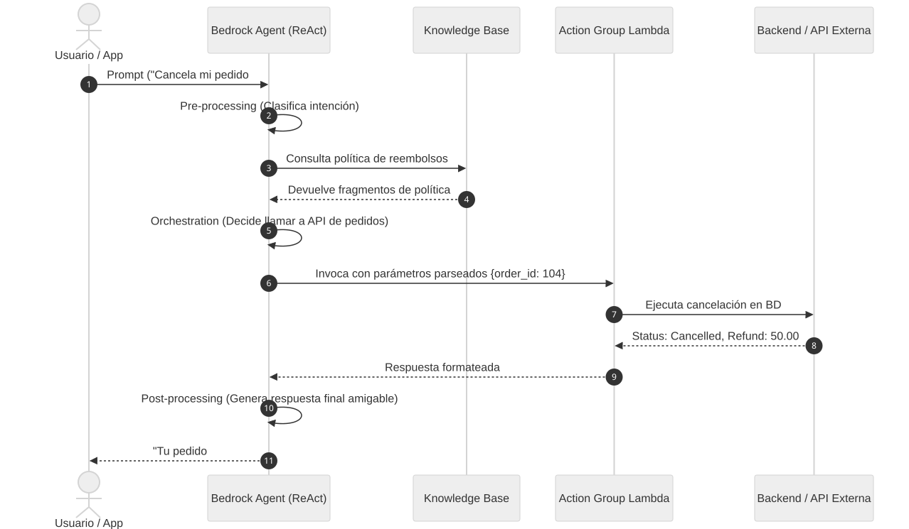
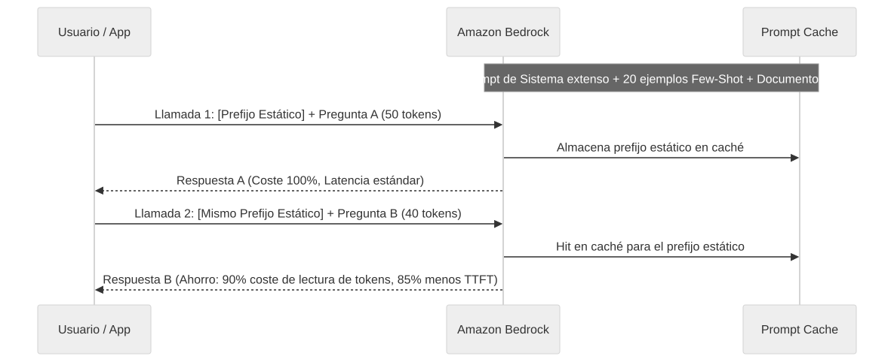

La IA Generativa es la rama del machine learning dedicada a modelos capaces de producir contenido nuevo —texto, código, imágenes, audio— a partir de un contexto de entrada, en lugar de limitarse a clasificar o predecir un valor sobre datos ya existentes. El motor detrás de casi toda aplicación de IA Generativa moderna es el Foundation Model (FM): un modelo de aprendizaje profundo, normalmente basado en la arquitectura transformer, entrenado de forma autosupervisada sobre volúmenes masivos de datos (texto de internet, código, libros, imágenes) durante una fase de preentrenamiento que cuesta millones de dólares en cómputo. El resultado es un modelo con un conocimiento general amplio del lenguaje, el razonamiento y el mundo, que después puede adaptarse a tareas concretas sin tener que repetir ese entrenamiento masivo desde cero.
Esa capacidad de adaptación es exactamente lo que Amazon Bedrock explota, y entenderla como un espectro de menor a mayor coste/esfuerzo es la primera idea que hay que interiorizar para el examen, porque una parte enorme de las preguntas gira alrededor de “¿cuál de estas cuatro técnicas es la más barata/rápida/sencilla para lograr X?”:
La regla general de examen es: si el enunciado no exige cambiar el comportamiento fundamental del modelo ni su conocimiento factual privado, la solución de menor esfuerzo es prompt engineering; si exige datos propios o actualizados, es RAG; solo si exige cambiar el comportamiento, tono o formato de forma consistente y a gran escala se justifica el fine-tuning.
Antes de entrar en Bedrock conviene fijar un pequeño vocabulario que el examen usa sin volver a explicar:
Antes de Bedrock, construir una aplicación de IA Generativa exigía elegir un proveedor de modelo, gestionar sus SDKs específicos, aprovisionar infraestructura de GPU (propia o de terceros) y resolver por cuenta propia la seguridad, el registro de auditoría y el escalado. Amazon Bedrock es, según la documentación oficial de AWS, “un servicio completamente gestionado que proporciona acceso seguro y de nivel empresarial a foundation models de alto rendimiento de las principales compañías de IA, permitiendo construir y escalar aplicaciones de IA Generativa” sin gestionar servidores ni clústeres de entrenamiento (docs.aws.amazon.com/bedrock/latest/userguide/what-is-bedrock.html). Bedrock agrega en una sola superficie de API y de facturación más de un centenar de modelos de proveedores como Amazon (familia Nova), Anthropic (Claude), Meta (Llama), Mistral AI, DeepSeek, Cohere y AI21 Labs, entre otros, y añade sobre ellos las capas transversales que el resto de este libro desarrolla: Knowledge Bases para RAG, Agents y Flows para orquestación, Guardrails para seguridad de contenido, y evaluación/observabilidad integradas con CloudWatch y SageMaker Clarify.
Esa naturaleza “serverless y multi-proveedor” es la clave de una de las reglas de examen más repetidas: cuando un escenario necesita poder cambiar de modelo o soportar varios proveedores con el mínimo esfuerzo de desarrollo, la respuesta casi siempre pasa por la capa de abstracción que Bedrock ofrece para eso — típicamente la API Converse (Módulo 1) — en lugar de construir integraciones a medida contra el SDK propio de cada proveedor.

El banco de 97 escenarios reales sobre el que se ha construido este libro se agrupa, de forma casi perfectamente equilibrada, en siete grandes bloques de competencia, que son exactamente los siete módulos que siguen:
Converse vs InvokeModel), los modos de consumo (On-Demand, Provisioned Throughput, Batch) y la inferencia multi-región.Casi ninguna pregunta del examen pide una definición aislada (“¿qué es X?”). El formato dominante es el escenario largo: una empresa ficticia describe su caso de uso, sus restricciones técnicas y, sobre todo, un criterio de decisión explícito —“con el MENOR esfuerzo de desarrollo posible”, “sin coste operativo adicional”, “cumpliendo con la residencia de datos en la UE”, “sin exponer las credenciales corporativas fuera de AWS”— y pide elegir, entre cuatro opciones, la única que satisface ese criterio, no solo la que “funcionaría”.
Esto tiene una consecuencia práctica para estudiar: casi todas las opciones incorrectas son técnicamente plausibles. Suelen ser servicios de AWS reales, usados de forma razonable, que resuelven un problema parecido pero no exactamente el que pide el criterio oculto del enunciado. Por eso cada capítulo de este libro no se limita a explicar “qué hace” cada servicio, sino que dedica secciones explícitas a los matices que separan a la opción correcta de sus distractores más plausibles — precisamente el patrón de razonamiento (“por qué A, B y D fallan y por qué C es correcta”) que reproducen las explicaciones oficiales del banco de preguntas en el que se basa este libro. Al estudiar, la pregunta que hay que hacerse siempre no es “¿qué servicio de AWS podría resolver esto?” sino “¿qué palabra del enunciado descarta a los otros tres?”.
Con esa lente en mente, el Módulo 1 empieza donde toda aplicación de IA Generativa en AWS empieza: las APIs de inferencia de Amazon Bedrock.
Amazon Bedrock es el servicio de AWS que expone, mediante una única API administrada y sin servidor (serverless), el acceso a un catálogo de Foundation Models (FMs) de distintos proveedores: Anthropic (familia Claude), Meta (Llama), Mistral AI, Amazon (familia Nova y el histórico Titan), Cohere, AI21 Labs, DeepSeek, OpenAI (mediante los modelos gpt-oss y una API de compatibilidad OpenAI), entre otros. La palabra clave que el examen espera que el candidato entienda en profundidad es “serverless”: Bedrock no obliga a aprovisionar, parchear ni escalar manualmente instancias de cómputo (GPU o de otro tipo) para poder invocar un modelo. AWS gestiona la infraestructura subyacente, y el desarrollador solo se preocupa por el contrato de la API —peticiones y respuestas HTTP/JSON firmadas con SigV4 e IAM— y por el modo de facturación que elige (on-demand, aprovisionado o por lotes, como se detalla más adelante).
Esta arquitectura tiene dos consecuencias directas que aparecen constantemente en las preguntas de examen. La primera es que el control de acceso a cada modelo se gestiona con políticas de IAM sobre acciones como bedrock:InvokeModel, bedrock:InvokeModelWithResponseStream, bedrock:Converse o bedrock:ConverseStream, en lugar de credenciales de aplicación separadas por proveedor de modelo: da igual si el modelo detrás es Claude o Nova, la autenticación siempre pasa por el mismo mecanismo de roles de IAM del propio servicio Bedrock. La segunda es que, al no existir instancias dedicadas al modelo por defecto, Bedrock necesita ofrecer varios “modos de inferencia” —on-demand, aprovisionado y por lotes— para cubrir perfiles de carga muy distintos, y el examen evalúa sistemáticamente si el candidato sabe emparejar cada escenario de negocio con el modo correcto.
Por encima de esos modos de inferencia, Bedrock añade una capa de API unificada (Converse/ConverseStream) que resuelve un problema práctico real: cada proveedor de modelos definió originalmente su propio formato de petición y de respuesta JSON, lo que complicaba escribir código portable entre modelos. Entender por qué existe esa capa —y cuándo conviene evitarla— es el segundo bloque teórico de este módulo.
Bedrock ofrece dos familias de operaciones de inferencia, ambas expuestas únicamente en el endpoint de plano de datos bedrock-runtime (no en el plano de control bedrock, que se usa para tareas administrativas como crear Provisioned Throughput o gestionar modelos personalizados).
InvokeModel e InvokeModelWithResponseStream son las operaciones de bajo nivel, prácticamente un paso directo hacia el modelo subyacente: el cuerpo de la petición (body) es un JSON cuya estructura depende por completo del proveedor del modelo. Invocar un modelo de Anthropic requiere un esquema de mensajes con campos como anthropic_version, max_tokens y un array messages; invocar un modelo de la familia Titan de Amazon requiere un esquema distinto con inputText y textGenerationConfig. Esto significa que cualquier aplicación que quiera admitir varios modelos, o migrar de un modelo a otro, debe mantener lógica de serialización/deserialización distinta para cada proveedor. La ventaja de esta familia de operaciones es el acceso íntegro a todos los parámetros específicos de cada modelo, incluidos los más nuevos o menos habituales que todavía no se hayan mapeado al formato común.
Converse y ConverseStream (esta última siendo la variante con streaming de tokens en tiempo real) nacen precisamente para eliminar esa fricción. Definen un esquema de solicitud y de respuesta idéntico para todos los modelos de Bedrock que admiten conversación: un array messages donde cada mensaje tiene un role (user o assistant, nunca system dentro del array: las instrucciones de sistema se pasan aparte, en un campo system de nivel superior de la petición), un bloque content que puede combinar texto, imágenes o documentos, un objeto inferenceConfig para parámetros comunes como maxTokens, temperature o topP, y —crucialmente— un mecanismo estandarizado de tool use / function calling mediante los campos toolConfig (para declarar las herramientas disponibles con su esquema JSON de entrada) y toolUse/toolResult (para que el modelo solicite invocar una herramienta y la aplicación le devuelva el resultado en el turno siguiente). Gracias a esa estandarización, el mismo código de orquestación de un agente puede intercambiar Claude por Nova o por Llama sin reescribir la capa de parseo, siempre que el caso de uso no dependa de un parámetro exclusivo de un proveedor concreto; y si lo necesita, Converse permite igualmente inyectar parámetros adicionales específicos del modelo a través de additionalModelRequestFields, sin perder la compatibilidad del resto del esquema.
El razonamiento que el examen premia no es memorizar “usa Converse por defecto”, sino entender el porqué: cuando el enunciado describe una aplicación que debe (a) funcionar igual en varios lenguajes de programación o SDKs, (b) sobrevivir a un cambio o a una comparación entre FMs, o (c) mantener contexto conversacional multi-turno de forma sencilla —reenviando el propio array de messages con los turnos anteriores, sin infraestructura de estado dedicada—, la respuesta correcta casi siempre pasa por Converse/ConverseStream. Por el contrario, cuando el enunciado exige un parámetro de inferencia exclusivo de un proveedor que aún no está expuesto en el esquema común, o cuando ya existe una integración heredada fuertemente acoplada al formato nativo de un modelo concreto, InvokeModel/InvokeModelWithResponseStream sigue siendo la elección correcta. Ambas familias comparten el mismo modelo de autenticación por IAM y ambas pueden apuntar tanto a un modelo base on-demand como a un ARN de Provisioned Throughput o a un perfil de inferencia entre regiones como modelId, así que la elección entre una y otra depende del formato de payload que necesita la aplicación, no del modo de facturación o de capacidad que se esté usando por debajo.
Conviene distinguir también estas dos operaciones de los dos métodos de invocación orientados a RAG con Knowledge Bases: RetrieveAndGenerate, que en una sola llamada consulta la base de conocimiento vectorial y genera la respuesta final con citas a las fuentes recuperadas, y Retrieve, que solo devuelve los fragmentos relevantes sin invocar ningún FM, dejando la generación en manos de la aplicación (típicamente porque esta necesita combinar esos fragmentos con su propia lógica de prompting, orquestación de agentes o post-procesado antes de generar la respuesta).
On-Demand. Es el modo de facturación por defecto: se paga por token de entrada y de salida consumido, sin ningún compromiso de capacidad ni de tiempo. La contrapartida es que la capacidad on-demand es compartida entre todos los clientes de una región y está sujeta a cuotas de solicitudes por minuto (RPM) y tokens por minuto (TPM) específicas de cada modelo; superarlas produce respuestas de throttling (error ThrottlingException) que la aplicación debe absorber, típicamente con reintentos con backoff exponencial. La documentación reciente de Bedrock matiza este modo distinguiendo niveles de servicio dentro del propio on-demand —Flex (el más económico, orientado a cargas tolerantes a demoras y con mayor riesgo de throttling, sin SLA), Standard (el equilibrio habitual de producción) y Priority (mayor coste por token a cambio de una asignación de throughput preferente y menor riesgo de throttling)— pero en cualquiera de sus variantes sigue siendo capacidad compartida y elástica, nunca capacidad reservada en exclusiva para la cuenta.
Provisioned Throughput. Resuelve exactamente el problema que el on-demand no puede garantizar: capacidad de inferencia dedicada y predecible, medida en Model Units (MUs). Cada MU representa una cantidad fija de capacidad de procesamiento (tokens de entrada y de salida por unidad de tiempo) que depende del modelo concreto; al comprar Provisioned Throughput se especifica el número de MUs necesarias y, opcionalmente, un commitmentDuration. Según la API CreateProvisionedModelThroughput, ese campo acepta únicamente los valores OneMonth o SixMonths; si se omite, se obtiene una Provisioned Throughput sin compromiso, facturada por hora y cancelable en cualquier momento, aunque a un coste por MU-hora superior al de los compromisos más largos (la duración más larga se paga con un descuento por hora a cambio de una permanencia mínima). Un matiz que el examen explota deliberadamente es que comprar Provisioned Throughput no basta por sí solo: hay que dirigir explícitamente las llamadas de inferencia (InvokeModel, InvokeModelWithResponseStream, Converse o ConverseStream) al ARN del modelo aprovisionado —el campo provisionedModelArn que devuelve CreateProvisionedModelThroughput— en el parámetro modelId de la petición; si el código sigue usando el identificador del modelo base on-demand, todo el tráfico continúa yendo a la capacidad compartida, la capacidad reservada aparece como no utilizada en las métricas de CloudWatch, y el throttling en el tráfico on-demand no desaparece, por mucho que se incrementen las MUs compradas. Otro matiz igualmente importante: Provisioned Throughput garantiza capacidad y ausencia de throttling dentro del volumen contratado, pero no es, por sí misma, una técnica de reducción de latencia por solicitud; para eso existe una capacidad distinta, Latency Optimized Inference, que se activa fijando el parámetro latency a optimized dentro de performanceConfig en la propia solicitud de inferencia, sin necesidad de reservar ni pagar capacidad fija, y con la particularidad de que si se agota la cuota de aceleración la petición simplemente se procesa a la latencia estándar en lugar de fallar. Por último, Provisioned Throughput es obligatorio —no opcional— para poder invocar cualquier modelo personalizado (fine-tuned o de continued pre-training) en producción, como se explica en la sección siguiente.
Batch Inference. Es el modo pensado para procesar grandes volúmenes de datos sin restricciones de latencia por solicitud individual: se define un trabajo que lee las peticiones desde un bucket de Amazon S3 (en un formato JSONL con un registro por línea) y escribe los resultados en otro bucket o prefijo de S3, procesándolos todos de forma asíncrona. Según la documentación oficial de capacidad y optimización de costes de Bedrock, este modo ofrece un ahorro de aproximadamente el 50% frente al precio on-demand por token, dentro de una ventana de procesamiento de hasta 24 horas y con límites de tamaño de trabajo (hasta 10.000 registros y un archivo de entrada de hasta 200 MB por trabajo, cifras que pueden variar por región y modelo). Es la opción correcta siempre que el enunciado describa generación de datos de entrenamiento, backlogs de moderación de contenido, generación masiva de informes o enriquecimiento de datos: cualquier caso donde no exista un usuario esperando la respuesta en tiempo real.
Cross-Region Inference (perfiles de inferencia). No es un modo de facturación distinto —de hecho sigue tarificándose a precio on-demand, sin coste adicional de enrutamiento ni de transferencia de datos— sino un mecanismo de enrutamiento de solicitudes de inferencia. Un perfil de inferencia con prefijo geográfico (us., eu., apac., entre otros) permite que Bedrock distribuya automáticamente las solicitudes entre varias regiones AWS de destino dentro de esa misma área geográfica, aumentando la capacidad efectiva disponible y mejorando la resiliencia frente a picos de tráfico o interrupciones puntuales de una región, sin que el desarrollador tenga que implementar lógica de reintento o failover entre regiones. Es fundamental no confundir esto con el movimiento de datos de entrenamiento: cross-Region inference nunca traslada los pesos del modelo ni afecta a cómo se entrenó; únicamente puede mover, de forma cifrada, el contenido de la solicitud de inferencia (el prompt de entrada y la respuesta generada) hacia otra región de la misma área geográfica para procesarla, y por defecto los datos permanecen almacenados solo en la región de origen. Por esta razón, en escenarios de residencia de datos estrictos por país (no solo por continente), un perfil geográfico “eu.” puede no ser suficiente si el requisito exige permanecer en una única región concreta, y conviene revisar qué regiones de destino incluye cada perfil antes de asumir que cumple un requisito de soberanía de datos. Cross-Region Inference sí es compatible con Provisioned Throughput, aunque puede requerir permisos de IAM adicionales sobre el modelo fundacional en todas las regiones de origen y de destino del perfil, no solo en la región donde se invoca.
Bedrock permite personalizar un subconjunto de FMs mediante dos técnicas de model customization: el fine-tuning (ajuste fino supervisado con pares de entrada/salida etiquetados, típicamente para especializar el estilo de respuesta o el formato de salida a un dominio concreto) y el continued pre-training (entrenamiento adicional no supervisado sobre un corpus de texto propio del dominio, para que el modelo absorba vocabulario y conocimiento específico sin depender de etiquetas). En ambos casos, el proceso de entrenamiento se ejecuta como un trabajo asíncrono que lee los datos de entrenamiento desde Amazon S3 y produce un “modelo personalizado” (custom model) que queda registrado dentro de la cuenta de Bedrock, asociado siempre al modelo base del que deriva.
La razón teórica —no solo la regla memorística— por la que estos modelos personalizados exigen Provisioned Throughput para poder invocarlos es que un modelo con pesos ajustados deja de ser parte del pool de capacidad compartida on-demand que Bedrock gestiona de forma multiinquilino para los modelos base: sus pesos, distintos a los del modelo base estándar, necesitan una copia de inferencia dedicada dentro de la infraestructura de Bedrock para poder servirse, y esa copia dedicada es exactamente lo que se paga al comprar Model Units. Por eso, aunque para probar un modelo personalizado durante la fase de evaluación se puede usar Provisioned Throughput sin compromiso, cualquier uso sostenido en producción implica necesariamente ese coste de capacidad dedicada, algo que conviene modelar en el análisis de costes desde el diseño del proyecto y no como un descubrimiento tardío tras el entrenamiento.

Una empresa que procesa informes financieros necesita ejecutar el mismo flujo de análisis en dos entornos muy distintos: funciones Lambda en Python que atienden peticiones puntuales, y contenedores en Amazon EKS que procesan lotes de informes en JavaScript según una programación. El reto no es solo técnico sino de coherencia: el mismo modelo fundacional debe responder igual en ambos entornos, la autenticación debe ser uniforme y el contexto de una conversación multi-turno debe conservarse entre llamadas sucesivas. La tentación de usar InvokeModel directamente falla porque obliga a mantener lógica de formateo de payload distinta para cada SDK y complica tener una autenticación consistente entre Lambda y EKS. Añadir una base de datos externa (por ejemplo Amazon ElastiCache) para guardar el estado de la conversación tampoco es necesario: la propia Converse API ya expone un esquema de solicitud/respuesta idéntico en todos los SDK de AWS, así que basta con reenviar el array messages completo —incluyendo los turnos anteriores con sus roles user/assistant— en cada nueva llamada para mantener el contexto, y usar roles de IAM con permiso sobre bedrock:InvokeModel como mecanismo de autenticación común a ambos entornos. La lección de fondo es que la Converse API no solo simplifica el código: elimina por diseño la necesidad de infraestructura de estado dedicada para casos de multi-turno sencillos, porque el propio protocolo de mensajes ya es el estado.
Un asistente de atención al cliente de una tienda online recibe un volumen de consultas donde la mayoría son preguntas sencillas sobre productos y una minoría son consultas complejas sobre política de devoluciones que exigen razonamiento más profundo. El objetivo de negocio es enrutar cada consulta al modelo más adecuado sin construir una arquitectura de clasificación propia. Construir un clasificador con un FM adicional y funciones Lambda para dirigir el tráfico funciona, pero implica diseñar, probar y mantener una arquitectura multietapa completa. Crear endpoints separados con reglas basadas en palabras clave tiene el mismo problema, y añadir Provisioned Throughput para el modelo grande suma además un compromiso de capacidad que puede no estar justificado. La solución de mínimo esfuerzo es el intelligent prompt routing nativo de Bedrock: un único endpoint sin servidor que predice, para cada solicitud entrante, qué modelo de una misma familia ofrecerá el mejor equilibrio entre calidad de respuesta y coste, y dirige automáticamente el tráfico sencillo hacia un modelo pequeño y económico y el tráfico complejo hacia un modelo más grande y capaz, ya sea usando un router predeterminado de AWS o configurando uno propio. La idea clave es que “mínimo esfuerzo de implementación” en el enunciado de un examen suele ser la pista textual que apunta hacia una capacidad gestionada de la plataforma, no hacia una arquitectura de orquestación construida a medida, aunque esa arquitectura a medida sea perfectamente viable técnicamente.
Una compañía de servicios financieros compra Provisioned Throughput para sostener un volumen constante de solicitudes durante el horario laboral, pero observa en CloudWatch que la capacidad reservada permanece sin usar mientras las solicitudes on-demand siguen sufriendo throttling en las horas de máxima carga. La causa no está en la cantidad de Model Units contratadas ni se soluciona añadiendo lógica de reintento con backoff: el código de la aplicación sigue invocando el modelo mediante su identificador de modelo base on-demand, de modo que ninguna solicitud llega nunca a la capacidad dedicada, sin importar cuánto se incremente. La corrección consiste en sustituir ese identificador por el ARN del modelo aprovisionado que devuelve la operación CreateProvisionedModelThroughput en el parámetro modelId de la llamada de inferencia. Este caso ilustra un patrón recurrente en el examen: cuando un enunciado describe capacidad reservada infrautilizada junto con throttling simultáneo en producción, casi siempre la causa raíz es un error de enrutamiento en el parámetro modelId, no una insuficiencia real de capacidad ni un problema de resiliencia de la aplicación.
Retrieval-Augmented Generation (RAG) es, con 20 de las 97 preguntas del banco de práctica, el tema individual más examinado — empatado con Agentes. La razón es estructural: casi cualquier aplicación empresarial de IA Generativa necesita anclar sus respuestas en datos propios y actualizados sin reentrenar el modelo, y Amazon Bedrock Knowledge Bases ofrece tantas piezas configurables (almacén vectorial, estrategia de chunking, filtrado, reranking, descomposición de consultas, ingesta) que el examen puede construir un escenario distinto combinando cada vez una pieza diferente. Dominar este módulo significa entender qué resuelve cada pieza y cuál es su límite exacto, porque casi todos los distractores son técnicamente plausibles — simplemente no resuelven el requisito específico que pide el enunciado, o lo resuelven con más esfuerzo del necesario.

Una Knowledge Base de Amazon Bedrock es el servicio totalmente gestionado que encapsula las cuatro etapas de un pipeline RAG — trocear documentos, generar embeddings, indexarlos en un almacén vectorial y orquestar la recuperación más la generación — sin que el equipo tenga que escribir ni mantener esa lógica. El patrón recurrente del examen es exactamente ese: cuando una opción propone “construir” alguna de esas etapas a mano (una función Lambda que llama a un modelo de embeddings, un endpoint de SageMaker para reranking, un pipeline con Step Functions), casi siempre es un distractor frente a la opción que activa la capacidad equivalente ya integrada en Knowledge Bases — salvo que el enunciado pida explícitamente algo que Knowledge Bases no soporta de forma nativa (una arquitectura de grafo complejísima, un modelo de embeddings de dominio muy específico entrenado a medida, etc.).
La pregunta “¿qué base de datos vectorial uso?” nunca se responde en abstracto: depende del volumen de datos, de si ya existe una base de datos relacional en la organización, de si se necesita precisión exacta o aproximada, y de si las relaciones entre entidades son tan importantes como la similitud semántica.
pgvector (incluida la variante Aurora Serverless v2) es la elección natural cuando la empresa ya tiene datos relacionales en PostgreSQL y quiere unificar datos transaccionales con vectores semánticos en el mismo motor, o cuando el volumen es modesto (por debajo de ~1 millón de documentos) y se prioriza la simplicidad operativa de una base serverless sobre un motor de búsqueda dedicado. El matiz de examen: si la variante es la instancia no-serverless de Aurora/RDS, la opción pierde puntos frente a una alternativa serverless porque exige aprovisionar y dimensionar manualmente la instancia — justo lo que “mínimo esfuerzo operativo” penaliza.El tamaño y la estrategia de chunking determinan directamente la calidad semántica de la recuperación, y el examen prueba tanto el cuándo usar cada estrategia como una restricción operativa poco intuitiva.
| Estrategia | Cómo funciona | Cuándo es la respuesta correcta |
|---|---|---|
| Fixed-size (por defecto) | Bloques de N tokens (300 por defecto, ~20% de overlap). | Documentos homogéneos y sencillos. Es el distractor típico cuando el problema real es que corta argumentos o cláusulas a la mitad. |
| Hierarchical (Parent-Child) | Chunks hijo pequeños para precisión de búsqueda; se recupera el chunk padre completo como contexto. | Cuando se necesita contexto amplio para síntesis, pero el escenario no exige agrupar por significado — solo por tamaño en dos niveles. |
| Semantic | Divide por similitud coseno entre oraciones adyacentes; parámetros breakpointPercentileThreshold y bufferSize. |
La respuesta preferida cuando el problema descrito es “se pierde contexto clave” o “se citan datos desactualizados/incompletos” porque el chunking de tamaño fijo corta argumentos legales, cláusulas o secciones a la mitad. Prioriza el significado sobre la posición del texto. |
| Custom (AWS Lambda) | Lógica propietaria invocada durante la sincronización. | Formatos altamente estructurados (tablas complejas, XML/JSON propietario) que las estrategias estándar destruyen. |
La estrategia de chunking de una Knowledge Base no se puede modificar después de conectar la fuente de datos. Si un escenario pide corregir un problema de fragmentación semántica, la solución correcta casi siempre implica reconfigurar la ingesta desde cero y regenerar los embeddings con la nueva estrategia — no un ajuste en caliente. Aumentar la dimensionalidad del embedding o migrar el almacén vectorial sin tocar el chunking nunca corrige un problema de fragmentación: la causa raíz sigue intacta.
Estas tres técnicas se confunden fácilmente porque todas “mejoran la relevancia”, pero atacan problemas diferentes y el examen exige identificar cuál corresponde a cada síntoma:
nombre-archivo.metadata.json con atributos (tipo de contenido, fecha, autor); una vez indexados, se filtra por esos atributos en Retrieve/RetrieveAndGenerate. Es la respuesta correcta cuando el síntoma es “la búsqueda vectorial evalúa demasiados documentos irrelevantes de tipos o periodos distintos” y el requisito es un cambio mínimo sobre la arquitectura existente — no exige migrar de almacén vectorial ni reentrenar embeddings.min_max/l2 y media aritmética, geométrica o armónica). Es la respuesta correcta cuando el síntoma es que la búsqueda pierde coincidencias exactas de términos, acrónimos, códigos de error o citas legales — algo que la búsqueda puramente vectorial “diluye” semánticamente. Se activa como un search pipeline sobre el mismo dominio de OpenSearch ya existente, sin infraestructura nueva.rerankingConfiguration dentro de vectorSearchConfiguration, disponible en Retrieve/RetrieveAndGenerate/RetrieveAndGenerateStream) — llamar a la API Rerank por separado como un paso adicional también funciona, pero obliga a orquestar manualmente varios pasos (Retrieve → Rerank → InvokeModel) en lugar de una sola configuración integrada.Tres escenarios aparentemente parecidos requieren tres respuestas distintas: (1) si el síntoma es que la búsqueda evalúa demasiados documentos de tipos y periodos irrelevantes y se pide un cambio mínimo, la respuesta es habilitar filtrado por metadatos indexando los atributos S3; (2) si el síntoma es que se pierden coincidencias exactas de acrónimos o términos técnicos, la respuesta es búsqueda híbrida; (3) si el síntoma es que la recuperación inicial devuelve documentos semánticamente parecidos pero contextualmente irrelevantes y se pide el mínimo esfuerzo operativo, la respuesta es activar el reranking nativo dentro de la configuración de la Knowledge Base, no desplegar un modelo de ranking en SageMaker ni orquestar la API Rerank por separado.
Además de mejorar cómo se buscan los documentos, Bedrock Knowledge Bases puede transformar la propia consulta antes de recuperar: la transformación QUERY_DECOMPOSITION (configurable vía QueryTransformationConfiguration) divide automáticamente una pregunta compleja en subconsultas más simples, cada una enfocada en un concepto o término específico, antes de ejecutar la recuperación. Esto reduce la dilución semántica — el efecto por el que una pregunta que mezcla varios conceptos técnicos recupera fragmentos genéricos que no cubren bien ninguno de ellos — sin necesidad de orquestar manualmente dos modelos (uno que descomponga, otro que expanda) ni de construir esa lógica con agentes o funciones Lambda personalizadas. Combinada con Amazon Bedrock Flows (un nodo de FM más un nodo de Knowledge Base conectados visualmente), resuelve con mínimo esfuerzo operativo el patrón “consulta compleja de dominio muy especializado, alto volumen, baja latencia”.
Cuando el requisito es que la aplicación explique su razonamiento y cite las fuentes, la respuesta con menor esfuerzo operativo es prácticamente siempre habilitar RetrieveAndGenerate (o su variante en streaming, RetrieveAndGenerateStream): la operación devuelve la respuesta generada junto con objetos Citation que enlazan cada afirmación con los fragmentos de origen exactos, sin que la aplicación tenga que comparar manualmente el texto generado contra los documentos recuperados. Construir esa comparación a mano (opción recurrente entre los distractores: usar Retrieve + InvokeModel por separado, o post-procesar con Amazon Comprehend Medical, o con Amazon Kendra más lógica propia) siempre implica más desarrollo para lograr un resultado que la API nativa ya ofrece integrado.
Un escenario recurrente describe un modelo que “inventa” productos, datos o citas inexistentes. La combinación de examen correcta combina dos palancas complementarias: (1) RAG con chunking semántico y embeddings bien ajustados, que ancla la generación en fragmentos de origen realmente relevantes en lugar de depender de lo aprendido en el entrenamiento; y (2) instrucciones explícitas de razonamiento paso a paso con verificación de hechos (chain-of-thought zero-shot) antes de emitir la respuesta final. Lo que no reduce alucinaciones, y aparece sistemáticamente como distractor: subir la temperature (aumenta la aleatoriedad, el efecto contrario); los content filters de Guardrails (detectan categorías de daño predefinidas — odio, violencia — no “patrones de alucinación”, que no existen como tal); y seguir resumiendo el documento completo en una sola pasada sin recuperación selectiva. El mecanismo real de Bedrock para detectar alucinaciones frente a una fuente de referencia es el Contextual Grounding Check de Guardrails (ver Módulo 4): calcula una puntuación de grounding (fidelidad a la fuente) y de relevance (pertinencia a la pregunta), no un filtro de “patrones”.
Varios escenarios de examen combinan RAG con requisitos de aislamiento, residencia de datos o actualización en tiempo casi real — la solución rara vez es una única Knowledge Base gigante:
bedrock:Retrieve, bedrock:GetDocumentContent) cuando haga falta compartir. Una única KB combinada, aunque tenga filtros de acceso, sigue compartiendo las mismas cuotas de servicio para todos los inquilinos.StartIngestionJob), Knowledge Bases admite ingesta directa de documentos individuales mediante un data source de tipo Custom y operaciones como IngestKnowledgeBaseDocuments, sin esperar a un trabajo de sincronización completo. La combinación típica de examen es: ingesta directa para el dato que cambia con frecuencia (p. ej. disponibilidad de habitaciones) y sincronización programada para el resto (políticas, descripciones).LIKE, stemming, índices por texto normalizado) no detectan reformulaciones semánticamente equivalentes con vocabulario distinto.Empatado con RAG como el bloque más examinado (20 de 97 preguntas), este módulo es también el más heterogéneo: bajo el paraguas de “agentes” el examen agrupa desde el patrón clásico ReAct de Amazon Bedrock Agents hasta la orquestación puramente determinista con AWS Step Functions, la gestión de configuración dinámica con AWS AppConfig, la plataforma agéntica de nueva generación AgentCore, y la integración con servidores del Model Context Protocol (MCP). El hilo conductor de casi todas las preguntas es una tensión constante: ¿este problema necesita razonamiento autónomo de un FM, o es en realidad un flujo de pasos fijos y predecibles que se resuelve mejor con orquestación determinista? Elegir la herramienta equivocada para esa pregunta es el origen de la mayoría de los distractores.
Un Amazon Bedrock Agent extiende un FM con la capacidad de razonar mediante el patrón ReAct (Reasoning + Acting): en cada turno, el agente decide si responde directamente, si debe consultar una Knowledge Base asociada (RAG automatizado para preguntas informativas) o si debe invocar una acción de un Action Group. Un action group se define mediante un esquema OpenAPI (JSON/YAML en S3) que describe endpoints, métodos y parámetros, y tiene dos mecanismos de ejecución:
El ciclo de vida de una invocación tiene tres fases —pre-processing (clasifica la intención), orchestration (razona, invoca acciones y consulta la KB) y post-processing (formatea la respuesta final)— y cada fase emite trace events que documentan el razonamiento, útiles como pista de auditoría nativa sin instrumentación adicional (ver Módulo 5). La memoria de sesión (sessionId, por defecto hasta 1 hora) mantiene el contexto multi-turno sin que el desarrollador gestione una base de datos externa, y la memoria a largo plazo resume sesiones anteriores para personalizar interacciones futuras.
Cuando un escenario describe múltiples dominios especializados (clínico, seguros, citas, reclamaciones) que deben escalar de forma independiente sin degradarse entre sí, la arquitectura documentada por AWS es jerárquica: un Supervisor Agent recibe la consulta, clasifica la intención en lenguaje natural y enruta hacia el Collaborator Agent especializado correspondiente. Cada agente del equipo —incluido el supervisor— puede tener sus propias herramientas, action groups, Knowledge Base y guardrails, lo que permite aislar los datos de cada dominio en bases de conocimiento independientes con control de acceso propio.
En Multi-Agent Collaboration, quien clasifica y enruta es siempre el supervisor, nunca los colaboradores. Un diseño con un supervisor por departamento, con traspasos manuales entre supervisores, o con un único agente “genérico” que enruta mediante reglas dentro de sus propias instrucciones, invierte el patrón documentado o renuncia a la especialización — ambos son distractores recurrentes.
Para requisitos de memoria persistente, identidad/autenticación, invocación tanto síncrona como dirigida por eventos, y observabilidad, combinados con la exigencia de máxima escalabilidad y mínimo código de orquestación propio, la plataforma de referencia es Amazon Bedrock AgentCore, con cuatro piezas clave:
InvokeAgentRuntime) y para procesamiento asíncrono/dirigido por eventos.Un agente de razonamiento sobre Lambda y REST APIs necesita preservar memoria entre interacciones, compartir estado entre agentes, soportar invocación tanto síncrona como dirigida por eventos, y aplicar control de acceso por sesión — con la máxima escalabilidad. Una arquitectura con Amazon Bedrock Agents clásico más AWS Step Functions, colas SQS y una tabla DynamoDB para el estado es funcionalmente válida, pero exige diseñar y mantener manualmente toda la persistencia de memoria y el control de sesión. AgentCore resuelve las mismas garantías (memoria, identidad, eventos, observabilidad) como servicio gestionado, y AgentCore Gateway conecta las Lambda y REST APIs existentes como herramientas MCP sin escribir código de orquestación — la combinación de menor esfuerzo y mayor escalabilidad.
Cuando el problema es en realidad una secuencia de pasos predecible —no un agente que debe decidir dinámicamente qué hacer— Step Functions es, con enorme frecuencia, la respuesta correcta frente a construir esa lógica con Lambda “a mano” o, peor, forzarla dentro de un agente de Bedrock. Cuatro capacidades nativas aparecen una y otra vez:
Parallel: ejecuta varias ramas del flujo de trabajo simultáneamente. Es la respuesta cuando el cuello de botella es la suma de latencias de llamadas secuenciales a un FM (por ejemplo, tres análisis independientes de un mismo informe): al paralelizar, el tiempo total pasa de la suma de las partes al tiempo de la rama más lenta. Ni la concurrencia aprovisionada de Lambda ni el auto-scaling de ECS resuelven este cuello de botella si el código interno sigue procesando de forma secuencial — el problema es de paralelismo lógico, no de capacidad de cómputo.Retry y Catch en cada estado Task: reintentos con backoff configurable ante errores transitorios y enrutamiento a un estado de fallback cuando se agotan los reintentos — la forma nativa y declarativa de lograr “degradación agraciada” sin escribir lógica de reintento a mano. Cuando un escenario pide resiliencia entre varios pasos secuenciales (por ejemplo, tres agentes de Bedrock más una Lambda de cálculo), la granularidad correcta es un Task por componente, cada uno con su propio Retry/Catch — envolver todo en una única Lambda orquestadora con un solo bloque de manejo de errores pierde granularidad y trazabilidad por componente.waitForTaskToken (“Wait for a Callback with the Task Token”): pausa la ejecución del state machine — sin consumir cómputo — hasta que un proceso externo llama a SendTaskSuccess/SendTaskFailure con el token de tarea. Es el patrón nativo para aprobación humana (un técnico revisa una recomendación generada por IA antes de aplicarla) y solo está disponible en flujos Standard (duraderos, hasta un año de ejecución, semántica exactly-once); los flujos Express (hasta 5 minutos, alto volumen, at-least-once) no soportan callbacks duraderos ni conservan historial completo de ejecución, por lo que son la elección correcta solo para procesamiento de alto volumen y corta duración sin necesidad de pausas.bedrock:invokeModel, operaciones de S3 (GetObject/PutObject) y, mediante la integración con el SDK de AWS, prácticamente cualquier API de más de 200 servicios (incluido comprehend:DetectPiiEntities) — sin funciones Lambda intermedias para un flujo lineal de leer-transformar-invocar-escribir. Cuando sí se necesita lógica de transformación no trivial (construir un prompt dinámico a partir de una transcripción, dar forma a una salida estructurada), una Lambda intermedia sigue siendo necesaria; el error de examen es usar una Lambda cuando no aporta nada, o evitarla cuando es imprescindible para la flexibilidad requerida.Cuando la salida entre estados de Step Functions supera el límite de 256 KiB (por ejemplo, trazas de razonamiento extensas de agentes encadenados), la práctica documentada por AWS es usar los campos opcionales Input.S3Uri / Output.S3Uri de la integración con Bedrock para leer/escribir el payload grande directamente en Amazon S3, combinados con ResultSelector y ResultPath para enrutar solo la referencia (pequeña) entre estados — sin añadir DynamoDB, sin comprimir/descomprimir con Lambda, y sin fragmentar el flujo en varias máquinas de estado coordinadas por EventBridge (lo que rompería la observabilidad de una única ejecución).
Un matiz recurrente: Step Functions no ofrece de forma nativa un mecanismo de traffic-shifting ponderado entre versiones de modelo de Bedrock (a diferencia de los endpoint variants de SageMaker, que no aplican a Bedrock). Para un despliegue canario de versiones de modelo con verificación de métricas y rollback automático, el patrón correcto es Provisioned Throughput para alojar cada versión más un flujo de Step Functions Standard disparado por EventBridge que desplaza tráfico en fases, consulta CloudWatch entre fases y decide avanzar o revertir — construido a medida porque Bedrock no expone ese enrutamiento por sí solo.
Disparo de flujos por eventos de S3: Amazon S3 no puede invocar directamente una máquina de estados de Step Functions como destino nativo de sus notificaciones de evento (solo SNS, SQS, Lambda o EventBridge). El patrón correcto para arrancar un flujo “en cuanto se sube un archivo” es habilitar las notificaciones de S3 hacia Amazon EventBridge y crear una regla que use la máquina de estados como destino — nunca una integración directa S3→Step Functions.
Amazon Bedrock Flows es un lienzo visual para flujos generativos deterministas mediante un grafo de nodos: Prompt nodes (invocación de un FM con una plantilla parametrizada), Knowledge Base nodes (consulta RAG), Condition/Branching nodes, Lambda nodes y nodos de almacenamiento en S3 (lectura y escritura). Es la elección natural cuando el flujo es sencillo y se beneficia de edición visual y de la integración nativa con el resto del ecosistema Bedrock (prompts gestionados, KB, agentes). El matiz de examen: un nodo de agente dentro de un Flow invoca un Agente de Bedrock completo, con su propia orquestación y memoria — no es el nodo adecuado para una simple llamada de inferencia (para eso existe el nodo Prompt). Cuando el flujo necesita construir dinámicamente prompts complejos con funciones intrínsecas, invocar decenas de servicios de AWS por su SDK, o requiere ejecuciones de larga duración con reintentos granulares por paso, AWS Step Functions ofrece más control y mejor integración con el resto de la plataforma AWS.
Un patrón que se repite bajo distintos disfraces —enrutamiento de modelos por nivel de cliente, A/B testing de prompts, cambio de proveedor de modelo en tiempo real— comparte siempre el mismo requisito de fondo: cambiar comportamiento sin desplegar código nuevo, con validación previa y capacidad de revertir. AWS AppConfig (una capacidad de Systems Manager) es la respuesta nativa:
temperature o el límite máximo de tokens) antes de desplegar el cambio.Linear20PercentEvery6Minutes) con rollback automático integrado con alarmas de CloudWatch si la salud de la aplicación se degrada durante el despliegue.localhost:2772) con caché local, evitando llamadas repetidas al servicio y manteniendo baja la latencia añadida.Frente a AWS Systems Manager Parameter Store, Amazon DynamoDB o Amazon ElastiCache como almacén de configuración: ninguno de los tres ofrece de forma nativa validadores de esquema, estrategias de despliegue gradual ni rollback automático basado en alarmas. Si el enunciado menciona explícitamente “validar antes de aplicar”, “pruebas A/B sin redespliegue” o “revertir automáticamente si las métricas se degradan”, la respuesta es AWS AppConfig — variables de entorno de Lambda, Parameter Store o un archivo en S3 leído directamente son casi siempre el distractor, incluso cuando “también” resuelven la lectura dinámica de configuración.
Cuando un agente necesita invocar herramientas especializadas expuestas como servidores MCP, el examen distingue con precisión dos ejes: transporte y hospedaje.
Sobre el hospedaje remoto, dos patrones válidos con matices de coste/control distintos:
InvokeMode = RESPONSE_STREAM (para soportar el streaming que exige el transporte) y AuthType = AWS_IAM (autenticación por SigV4, con permisos lambda:InvokeFunctionUrl en políticas de identidad o de recursos para acceso cross-account) — la alternativa de menor esfuerzo operativo cuando no se necesitan las capacidades adicionales de API Gateway (planes de uso, autorizadores personalizados, dominios propios), tanto para consumidores internos como para socios externos autorizados mediante políticas de recursos.Las claves de API de Amazon API Gateway están pensadas para identificación y limitación de uso (throttling), no para autenticación/autorización fuerte — si el enunciado exige “controles estrictos de autenticación y autorización”, una opción que solo propone API keys es un distractor. Del mismo modo, invocar la función Lambda de un servidor MCP de forma asíncrona, o mediante la API Invoke de control en lugar de un transporte HTTP real, rompe el modelo síncrono de petición-respuesta JSON-RPC que exige MCP.
Un escenario recurrente combina un requisito de personalización con datos que ya viven en una base de datos relacional (por ejemplo, historial de reservas en Amazon RDS). La tentación es convertir esos datos en embeddings y aplicar RAG — pero la documentación de AWS es explícita: para datos estructurados, la vía recomendada es text-to-SQL (traducir la pregunta en lenguaje natural a una consulta SQL, con validación de la consulta generada antes de ejecutarla), porque preserva la exactitud transaccional (sumas, fechas exactas, estados) que la búsqueda semántica por similitud no garantiza. Bedrock Knowledge Bases para almacenes de datos estructurados se conecta de forma nativa a Amazon Redshift o al AWS Glue Data Catalog — no directamente a Amazon RDS — reforzando que RDS transaccional no es, por defecto, una fuente de una KB de Bedrock. La combinación de examen para reducir alucinaciones sobre datos estructurados es text-to-SQL con validación de la consulta + guardrails de Bedrock + un flujo determinista de validación (Step Functions/Lambda) — no “confidence scoring” ni “búsqueda por similitud semántica”, que no tienen sentido metodológico sobre datos tabulares exactos.

Amazon Bedrock Guardrails implementa salvaguardas independientes del modelo para filtrar entradas maliciosas y salidas no deseadas, aplicables a modelos, agentes, knowledge bases e incluso modelos fuera de Bedrock mediante la API ApplyGuardrail. Con 11 preguntas dedicadas, este módulo premia sobre todo la precisión terminológica: cada componente de un guardrail resuelve un problema distinto y comparte fronteras muy finas con sus vecinos — confundir “bloquear un tema” con “filtrar contenido dañino”, o “enmascarar PII” con “bloquearla”, es exactamente el tipo de error que el examen está diseñado para detectar.

| Componente | Qué detecta | Matiz que el examen explota |
|---|---|---|
| Denied Topics | Temas definidos semánticamente en lenguaje natural (nombre, definición de hasta 200 caracteres, hasta 5 frases de ejemplo). | Es la herramienta para bloquear intenciones de negocio (“asesoramiento de inversión concreto”, “temas fuera de dominio”) — no para nombres propios ni listas léxicas exactas (eso son word filters). |
| Content Filters | 6 categorías predefinidas de daño: Hate, Insults, Sexual, Violence, Misconduct, Prompt Attack. Severidad configurable por separado para input/output: None, Low, Medium, High. | Insults incluye explícitamente lenguaje de bullying; Hate es discriminación por identidad — no cubre acoso general. No existe una categoría de “patrones de alucinación”: eso es el contextual grounding check, no un content filter. |
| Sensitive Information Filters (PII) | Entidades PII predefinidas + regex personalizados. Acciones: Block o Mask (ANONYMIZE), configurables por separado para input (InputAction) y output (OutputAction). |
Si la conversación debe continuar sin exponer PII → Mask. Si debe impedirse por completo que un dato llegue al modelo o al usuario → Block. Mask en producción para PII expuesta al usuario final es casi siempre incorrecto si el requisito real es “que la PII no llegue al cliente”. |
| Word Filters | Coincidencia léxica exacta — nombres de competidores, marcas, listas CSV desde S3 (hasta 10.000 términos). | Explícitamente documentado por AWS para bloquear “contenido con nombres de competidores o productos” — un content filter no detecta coincidencias léxicas de nombres propios. |
| Contextual Grounding Check | Grounding Score (fidelidad a la fuente de referencia) y Relevance Score (pertinencia a la pregunta), umbral 0.0–0.99. | Umbral alto = menos alucinaciones permitidas (más estricto). Un umbral bajo deja pasar respuestas poco fundamentadas — es el distractor cuando el requisito es “ceñirse a la guía aprobada”. |
Una entidad financiera necesita bloquear conversaciones sobre asesoramiento de inversión concreto, impedir que se mencione a la competencia, y garantizar que las respuestas no contengan afirmaciones no respaldadas por su guía aprobada. Ningún control por sí solo cubre los tres riesgos: los denied topics bloquean la intención semántica de pedir consejo de inversión; los word filters con los nombres de competidores en modo block impiden su mención literal; y un umbral alto de Grounding Score en el contextual grounding check bloquea afirmaciones no ancladas en la guía financiera aprobada. Ni los content filters (pensados para odio/violencia/insultos, no para intención de negocio) ni un umbral bajo de grounding (que permite más alucinaciones, no menos) resuelven estos requisitos.
Un matiz de examen contraintuitivo: en los content filters, el nivel High bloquea contenido con confianza HIGH, MEDIUM y LOW (solo deja pasar confianza NONE) — es la configuración más agresiva y la que genera más falsos positivos. El nivel Medium bloquea únicamente confianza HIGH y MEDIUM, dejando pasar LOW y NONE — el punto de equilibrio cuando el enunciado pide explícitamente “aplicar políticas eficazmente con mínimos falsos positivos”. Si el escenario no menciona restricciones sobre falsos positivos, High es razonable para contenido de alto riesgo (por ejemplo, ataques de prompt injection sofisticados); si sí las menciona, Medium — combinado con denied topics bien definidos y filtros de información sensible con acciones diferenciadas por dirección (mask en output, block en input) — es la respuesta que ofrece múltiples estrategias de tratamiento sin sacrificar precisión.
Del mismo modo, la acción de un content filter no es binaria entre “bloquear” o “nada”: la opción Detect (sin acción) registra e identifica el contenido dañino para seguimiento y alerta, pero deja pasar la respuesta — la respuesta correcta cuando el enunciado dice explícitamente “notificar pero no bloquear todas las respuestas señaladas”.
ApplyGuardrail: guardrails desacoplados de la inferenciaUn guardrail no tiene por qué invocarse únicamente como parte de una llamada a Converse/InvokeModel. La API ApplyGuardrail evalúa contenido de forma independiente y desacoplada de cualquier invocación de modelo — se le pasa el guardrailIdentifier y el contenido a evaluar, en cualquier punto del flujo de la aplicación. Esto habilita un patrón de examen recurrente: aplicar dinámicamente un guardrail distinto según el rol del usuario autenticado (por ejemplo, con grupos de Amazon Cognito) sobre la salida de una única Knowledge Base compartida — un guardrail que enmascara PII para el grupo “ingenieros” y otro que la deja pasar para el grupo “cirujanos” — sin duplicar la base de conocimiento ni el almacenamiento. Duplicar la KB con una copia redactada y otra sin redactar, o redactar la PII de forma permanente en el documento de origen (lo que la destruiría también para quienes sí deben verla), son distractores típicos que ignoran que ApplyGuardrail permite decidir en tiempo de consulta, no en tiempo de ingesta.
Un guardrail profile habilita inferencia cross-Region para la evaluación de la política del guardrail — de forma análoga a los inference profiles de modelos, enruta las evaluaciones entre regiones de la misma geografía para dar continuidad si una región no está disponible, sin coste adicional. Pero la documentación de AWS es explícita en un matiz que el examen usa como trampa: aunque la configuración del guardrail vive en la región principal, los prompts de entrada y las respuestas de salida evaluados pueden moverse fuera de esa región principal durante la inferencia cross-Region. Por tanto:
Si el requisito es resiliencia/failover ante una interrupción regional, un guardrail profile cross-Region es la respuesta correcta. Si el requisito es que el procesamiento ocurra exactamente en la misma región donde está el cliente (residencia de datos estricta, no solo “dentro de la misma geografía”), un guardrail cross-Region viola ese requisito — la respuesta correcta es desplegar una copia independiente del guardrail en cada región donde opera la empresa.
Los content filters y los filtros de información sensible de Bedrock Guardrails cubren tanto texto como imágenes, y pueden combinarse con servicios de IA especializados cuando el contenido de entrada no es texto: Amazon Rekognition (DetectModerationLabels) para moderación de imágenes, y Amazon Comprehend (DetectPiiEntities/StartPiiEntitiesDetectionJob) para PII en texto no gestionado por Bedrock. Orquestar estos servicios gestionados con AWS Step Functions —sin entrenar modelos propios en SageMaker ni construir clasificadores a medida— es el patrón de menor sobrecarga de infraestructura para pipelines de moderación de contenido generado por usuarios (imágenes + texto subidos a un flujo respaldado por S3).
Un matiz importante sobre Amazon Comprehend Trust and Safety (DetectToxicContent, clasificación de seguridad de prompts): AWS ha discontinuado la disponibilidad de la clasificación de seguridad de prompts de Comprehend para clientes nuevos, y recomienda explícitamente usar Amazon Bedrock Guardrails para esa capacidad en implementaciones nuevas. Si una opción de examen describe una arquitectura nueva apoyada en esa funcionalidad concreta de Comprehend, es una señal de que Bedrock Guardrails es probablemente la alternativa más alineada con la documentación vigente — aunque la detección de toxicidad y de PII de Comprehend siguen siendo válidas y utilizables en paralelo (no en cadena secuencial, para minimizar la latencia acumulada antes de que el contenido llegue al FM).
Un guardrail impide que una respuesta dañina o no fundamentada salga, pero no aporta por sí solo el contexto factual que evita que el modelo especule. Cuando el requisito combina “no debe generar interpretaciones especulativas” con “debe basarse en datos empíricos reales” (por ejemplo, un asistente de investigación sobre comportamiento animal a partir de sensores y grabaciones), la arquitectura correcta combina RAG (una Knowledge Base con los resúmenes/transcripciones reales, que ancla la respuesta en los registros) con el contextual grounding check o denied topics de Guardrails para restringir explícitamente las salidas especulativas — ninguna de las dos piezas sola es suficiente: sin RAG, el guardrail no tiene nada contra qué “anclar” la respuesta; sin guardrail, RAG reduce pero no elimina la posibilidad de que el modelo añada interpretación no soportada por el contexto recuperado.
Cuando el requisito combina formato de respuesta consistente, tono adaptado por audiencia y moderación de contenido, con el objetivo de minimizar la orquestación y el mantenimiento de post-procesamiento propio, la combinación de referencia es Amazon Bedrock Prompt Management (plantillas reutilizables con variables, versionadas, una por unidad de negocio o audiencia) + Amazon Bedrock Guardrails (content filters por categoría, word filters, sensitive information filters) — ambos servicios completamente gestionados, sin funciones Lambda de post-procesamiento, sin tablas de reglas en DynamoDB, y sin necesidad de una “API de administración” propia para ajustar los criterios de moderación en el tiempo: se edita la configuración del guardrail o de la plantilla directamente.
La monitorización de aplicaciones de IA generativa tiene una particularidad que la distingue de la observabilidad tradicional de software: no basta con saber que un servicio responde rápido y sin errores HTTP; hay que saber si lo que responde es correcto, fiel a sus fuentes y justo. Este módulo cubre las dos caras de esa moneda —evaluación de calidad y observabilidad operativa— y es, junto con Seguridad y RAG, uno de los bloques con más peso real en el examen. La clave para superar sus preguntas no es memorizar servicios sueltos, sino entender qué mide exactamente cada herramienta y, sobre todo, qué NO mide, porque casi todos los distractores del examen consisten en aplicar la herramienta correcta a la métrica equivocada, o una herramienta reactiva donde se pedía algo proactivo/automático.
Amazon Bedrock Evaluations permite comparar el rendimiento de distintos FMs (o distintas variantes de prompt) frente a un conjunto de datos de entrada, sin necesidad de construir un pipeline de evaluación propio. Existen dos modalidades:
Un matiz que el examen explota con frecuencia: combinar ambas modalidades no es redundante, es la mejor práctica. Un patrón recurrente en los escenarios reales es un sistema híbrido donde el LLM-as-a-judge cribe automáticamente el grueso del tráfico y solo los casos marcados como límite o de alto riesgo (por ejemplo, en un dominio clínico o financiero) pasen a revisión humana dirigida —normalmente mediante Amazon Augmented AI (Amazon A2I), que permite configurar “human review workflows” que se activan solo ante ciertas condiciones—. Esta arquitectura reduce drásticamente el coste de revisión manual sin renunciar a una red de seguridad humana en los casos que importan.
Bedrock también ofrece evaluaciones específicas para RAG, con dos tipos de trabajo bien diferenciados que el examen distingue con precisión quirúrgica:
knowledgeBaseId o ragSourceIdentifier) y un único modelo generador, así que comparar varias estrategias de chunking o varios FMs a la vez implica en la práctica ejecutar varios trabajos y comparar después sus resultados.Para el acceso a datos, hay un detalle que aparece explícitamente en el examen: el bucket de S3 con los datasets de entrada solo necesita permisos de IAM adecuados para el rol de servicio de Bedrock; la configuración de CORS solo es obligatoria en evaluaciones con revisión humana (para que el portal de anotadores pueda renderizar los prompts en el navegador), no en evaluaciones automáticas. Añadir un VPC endpoint tampoco es necesario salvo que el tráfico deba permanecer dentro de una VPC sin salida a Internet.
Cuando un sistema RAG ya está en producción y se quiere medir su calidad de forma continua (no solo en un trabajo de evaluación puntual), la industria converge en el framework conceptual RAGAS (Retrieval Augmented Generation Assessment), que descompone la calidad en tres ejes:
Calidad RAG = f(Context Relevance,Faithfulness,Answer Relevance)
Estos mismos tres ejes son, en esencia, los que Bedrock Evaluations materializa con sus métricas integradas (Context Relevance/Coverage, Faithfulness, Correctness/Relevance), y también los que se pueden replicar con métricas personalizadas: Bedrock permite definir hasta 10 métricas por trabajo de evaluación, cada una con su propio prompt de instrucciones para el modelo juez y su propio esquema de puntuación (por ejemplo, una escala de 1 a 5), lo que permite construir métricas a medida como “precision at k” para escenarios muy específicos, como comparar múltiples estrategias de chunking entre sí.
SageMaker Clarify es el servicio de AWS diseñado específicamente para el análisis de sesgo (bias) y equidad (fairness), y es un tema que reaparece en el examen con enunciados que, a primera vista, parecen de observabilidad pero en realidad piden equidad estadística. La señal inequívoca es cualquier mención a “grupos demográficos”, “disparidad entre segmentos” o “favorecido/desfavorecido”: ahí, la respuesta casi siempre es Clarify, no Guardrails ni CloudWatch a secas.
Clarify distingue dos momentos de análisis. Las métricas pre-entrenamiento se calculan sobre el dataset crudo, antes de entrenar o invocar ningún modelo, y responden a la pregunta “¿los propios datos ya están desequilibrados entre grupos?”; ejemplos típicos son el Class Imbalance (CI) (desequilibrio en el tamaño de cada facet) o la Difference in Proportions of Labels (DPL) (diferencia en la proporción de resultados positivos observados entre el grupo favorecido y el desfavorecido). Las métricas post-entrenamiento —hasta once métricas distintas— se calculan sobre las predicciones del modelo ya entrenado (o sobre las respuestas de un modelo generativo) y cuantifican si el sesgo se mantuvo, se corrigió o se amplificó; las más citadas en el examen son la Difference in Positive Proportions in Predicted Labels (DPPL), el Disparate Impact (DI) —el cociente, no la diferencia, entre la proporción de resultados positivos del grupo desfavorecido y el favorecido— y la Accuracy Difference (AD), que compara la precisión del modelo entre ambos grupos. Todas estas métricas comparan resultados entre “facets”, es decir, los grupos demográficos favorecido y desfavorecido que el analista define explícitamente (por ejemplo, edad, género o código postal), y esta misma lógica de comparación por facets se extiende también a la evaluación de modelos de lenguaje o generativos, no solo a clasificadores clásicos.
Un punto muy explotado en el examen: los trabajos de monitorización de deriva de sesgo (bias drift monitoring) de Clarify —ejecutados como SageMaker Model Monitor jobs sobre un endpoint o sobre un batch transform— publican estas métricas automáticamente en Amazon CloudWatch, bajo el namespace aws/sagemaker/Endpoints/bias-metrics para endpoints en tiempo real, o aws/sagemaker/ModelMonitoring/bias-metrics para trabajos por lotes (batch transform). Cada métrica se publica con propiedades/dimensiones que incluyen Endpoint, MonitoringSchedule, BiasStage (con valor Pre-training o Post-Training, para distinguir de qué fase procede el dato), Label/LabelValue (la etiqueta objetivo) y, sobre todo, Facet y FacetValue, que identifican exactamente qué grupo demográfico está detrás de cada punto de la serie temporal. Esto permite crear alarmas de CloudWatch —incluidas alarmas compuestas que combinen estas métricas de sesgo con métricas de latencia u otras métricas de negocio de Bedrock— para alertar ante una discrepancia entre grupos que supere un umbral (por ejemplo, un 15%), y generar dashboards y reportes periódicos comparando variantes de prompt o de modelo. Conviene una precisión honesta de cara al examen: tanto SageMaker Clarify como el propio SageMaker Model Monitor han pasado a un estado de disponibilidad limitada para clientes nuevos (los clientes existentes siguen operando con normalidad y AWS mantiene el servicio), pero eso no cambia el hecho de que, entre las opciones típicas de un enunciado, sigue siendo el único servicio de AWS con métricas de equidad estadística nativas y publicación automática en CloudWatch.
Es fundamental no confundir esto con las métricas de Amazon Bedrock Guardrails, publicadas bajo el namespace AWS/Bedrock/Guardrails: sus dimensiones nativas en CloudWatch son Operation, GuardrailContentSource (valores Input/Output), GuardrailPolicyType (valores ContentPolicy, TopicPolicy, WordPolicy, SensitiveInformationPolicy, ContextualGroundingPolicy) y GuardrailArn/GuardrailVersion —no existe ninguna dimensión “por grupo demográfico”—, y su métrica InvocationsIntervened cuenta cuántas invocaciones fueron bloqueadas o modificadas por el guardrail, no calcula ninguna disparidad estadística entre segmentos de población. Un guardrail con filtros de contenido detecta odio, insultos o contenido sexual; no mide equidad.
Cuando el objeto a monitorizar no es un modelo aislado sino un Bedrock Agent, la trazabilidad relevante no vive en métricas de CloudWatch sino en los eventos de traza que el propio servicio emite en cada invocación, divididos en cuatro fases:
Cuando un escenario de examen describe un agente que “falla al llamar a una API” o “no ejecuta la acción esperada”, la fuente de diagnóstico correcta es la traza de orquestación/fallo del propio agente, no una métrica genérica de CloudWatch ni un log de aplicación construido a medida.
Model Invocation Logging es la funcionalidad nativa que registra, sin escribir una sola línea de código, el texto completo de los prompts y las respuestas para las operaciones InvokeModel, InvokeModelWithResponseStream, Converse y ConverseStream, junto con metadatos de cada llamada (identidad del invocador, modelo, tokens, latencia) y, cuando corresponde, los propios vectores de embeddings generados por un modelo de embeddings. Cuando se usa la API Converse con contenido multimodal, las imágenes o documentos adjuntos también quedan registrados en el bucket de S3, siempre que la entrega y el registro de imágenes estén habilitados. Los dos destinos posibles son un bucket de Amazon S3 o un grupo de logs de Amazon CloudWatch Logs —ambos deben residir en la misma cuenta y región que la configuración de logging—, y ambos destinos admiten cifrado en reposo con AWS KMS (incluida una política de KMS específica para que el servicio de Bedrock pueda generar claves de datos). Sobre estos logs es donde el examen construye buena parte de sus escenarios de “consumo anómalo de tokens”:
AWS/Bedrock, métricas de runtime como Invocations, InputTokenCount y OutputTokenCount, listas para dashboards y alarmas sin ETL adicional.CountTokens, sin coste adicional, como alternativa moderna a construir tokenizadores propios por modelo.Conviene remarcar una distinción que el examen convierte en trampa recurrente: Bedrock Model Evaluation es, por diseño, un proceso por lotes/offline —se ejecuta contra un dataset de prompts antes o durante el desarrollo, no intercepta tráfico en producción—. El mecanismo que sí actúa en el momento de cada invocación real (a través de InvokeModel, Converse o ApplyGuardrail) para detectar y bloquear alucinaciones es la Contextual Grounding Check dentro de Amazon Bedrock Guardrails, que asigna a cada respuesta una puntuación de grounding (fidelidad a la fuente) y otra de relevance, con umbrales configurables. Si un escenario pide detección de alucinaciones “casi en tiempo real” o “antes de que la respuesta llegue al usuario”, la respuesta correcta pasa por Guardrails, no por un trabajo de Model Evaluation.
Para la resiliencia operativa frente a fallos transitorios de la API (throttling, timeouts), el examen premia usar los modos de reintento estándar del AWS SDK (standard, con backoff exponencial y jitter incorporados, y un “token bucket” de cuota de reintentos que evita seguir reintentando ante fallos generalizados) combinados con AWS X-Ray para trazado distribuido real entre los límites de servicio, incluidas anotaciones indexables para correlacionar la latencia con un modelo o versión concreta. El modo adaptive existe y es válido, pero AWS lo recomienda solo para el caso concreto de un cliente apuntando a un único recurso con throttling frecuente, no como opción general; y AWS CloudTrail no traza solicitudes distribuidas, solo audita quién invocó qué API y cuándo.

Una empresa de retail necesita detectar disparidades de más del 15% entre grupos demográficos en las recomendaciones de dos variantes de prompt, con alertas casi en tiempo real y reportes semanales. La tentación es pensar en Guardrails (por la palabra “contenido”) o en un pipeline de EventBridge + Lambda a medida. Ambas fallan: los content filters de Guardrails no miden disparidad estadística y no existe una dimensión por grupo demográfico en sus métricas de CloudWatch, y construir la lógica de equidad desde cero contradice el requisito de mínimo esfuerzo de desarrollo. La respuesta ganadora combina SageMaker Clarify (que sí calcula métricas de equidad entre facets) publicando en CloudWatch, con alarmas compuestas que correlacionan esas métricas de sesgo con métricas de latencia de Bedrock.
Una aplicación con integraciones de herramientas sufre picos de consumo de tokens inexplicables pese a un tráfico de usuario estable, y se pide identificar qué herramienta concreta lo causa, con umbrales que se adapten solos al tráfico. Un dashboard con alarmas de umbral fijo (por herramienta) resuelve la visibilidad pero no la adaptación automática; consultas programadas por lotes sobre S3 con Athena o Glue añaden retraso y mantenimiento. La combinación ganadora es enviar el invocation logging a CloudWatch Logs, extraer patrones por herramienta con metric filters, y aplicar CloudWatch Anomaly Detection sobre esas métricas por herramienta: el modelo estadístico de banda esperada se recalcula solo con el histórico, sin tocar un umbral a mano.
Una entidad financiera necesita, en 60 días y con menos de 200 ms de latencia añadida, detectar alucinaciones, aplicar controles de seguridad, monitorizar deriva y mantener un audit trail para regulación, integrándose con un dashboard de cumplimiento ya existente. Las opciones que introducen infraestructura propia de bases de datos relacionales o de búsqueda (RDS, OpenSearch) o servicios de analítica adicionales (QuickSight, SageMaker Model Monitor fuera de Bedrock) multiplican el trabajo de aprovisionamiento y mantenimiento. La combinación con menor sobrecarga operativa apoya los controles de contenido en Guardrails, el audit trail en DynamoDB (con TTL, sin gestión de clústeres) y la integración de métricas en CloudWatch personalizado: tres servicios serverless que cumplen el plazo y la latencia sin construir infraestructura dedicada.
Tras actualizar el modelo que sostiene un asistente multilingüe de atención al cliente, una empresa observa que el asistente empieza a responder de forma distinta ante preguntas equivalentes según el idioma. Para futuras actualizaciones, necesita evaluar más de 15.000 conversaciones de prueba en paralelo, en menos de 45 minutos, de forma completamente automatizada e integrada en el pipeline de CI/CD, bloqueando el despliegue si la calidad no alcanza el umbral exigido. Enfoques centrados solo en infraestructura (simulación de tráfico y métricas de latencia/concurrencia) o en desplegar en más regiones con auditorías manuales semanales no evalúan en ningún momento si el significado de la respuesta se mantiene entre idiomas, y tampoco pueden bloquear un despliegue de forma automática. La solución correcta construye conjuntos de conversaciones de prueba estandarizadas con significado idéntico en cada idioma soportado y los ejecuta como trabajos de evaluación de modelos de Amazon Bedrock en paralelo, aplicando métricas integradas como Faithfulness (alucinación) y Correctness/similitud semántica frente a una respuesta de referencia; el pipeline de CI/CD consulta el resultado del trabajo vía API y bloquea la promoción a producción si los umbrales de similitud o alucinación no se cumplen, cerrando así el ciclo de “evaluación como puerta de calidad” en lugar de como auditoría posterior.
En una aplicación de IA Generativa, el “rendimiento” no es una única variable: es la combinación de la latencia percibida por el usuario (cuánto tarda en aparecer el primer carácter de la respuesta), el throughput sostenido que la arquitectura puede absorber sin degradarse, y el coste por unidad de trabajo (por token, por invocación, por hora de capacidad reservada). Este módulo profundiza en las tres palancas que Amazon Bedrock ofrece para mover esas variables — streaming, prompt caching y los distintos modos de inferencia — y en cómo diseñar una aplicación resiliente frente al throttling, que es la forma en que Bedrock comunica que se ha superado una cuota de servicio.
Cuando un modelo fundacional genera una respuesta larga, el tiempo total de generación puede oscilar entre varios segundos y más de un minuto. Si la aplicación espera a tener el texto completo antes de mostrar nada, el usuario percibe ese tiempo total como “lentitud” o incluso como un fallo (timeout). La técnica que resuelve esto no es acelerar al modelo, sino cambiar el contrato de entrega: en lugar de una única respuesta al final, el servicio entrega la respuesta en fragmentos (chunks) a medida que el modelo los genera. La métrica que de verdad le importa al usuario deja de ser la latencia total y pasa a ser el Time To First Token (TTFT): el tiempo hasta que aparece el primer fragmento visible.
Amazon Bedrock expone esta capacidad a través de las variantes de streaming de sus dos familias de API: ConverseStream (recomendada, formato unificado entre proveedores) e InvokeModelWithResponseStream (payload específico del proveedor). Para flujos RAG existe además RetrieveAndGenerateStream, que combina recuperación y generación incremental en una sola llamada — una API distinta de InvokeModelWithResponseStream, que solo invoca el modelo y no ejecuta ninguna lógica de recuperación contra una Knowledge Base. Confundir ambas es un error de diseño frecuente: sustituir RetrieveAndGenerate/RetrieveAndGenerateStream por InvokeModelWithResponseStream obliga a reimplementar manualmente toda la orquestación de recuperación que Bedrock ya gestiona.
Recibir los fragmentos en el backend es solo la mitad del problema; la otra mitad es transportarlos hasta el navegador o la app del cliente sin perder el efecto incremental. Existen tres patrones de referencia:
@aws-amplify/ui-react-ai) está diseñado específicamente para aplicaciones React que consumen Bedrock a través de AppSync: sus “conversation routes” usan las suscripciones GraphQL en tiempo real para entregar la respuesta token a token al cliente, mientras el resolver Lambda invocado en modo síncrono (RequestResponse, el valor por defecto de los resolvers Lambda de AppSync) sigue ejecutando la llamada a Bedrock en segundo plano. Es la opción de menor esfuerzo cuando la aplicación ya vive sobre la pila AppSync/Amplify, porque no exige rediseñar la arquitectura.InvokeModelWithResponseStream (o ConverseStream) y reenvía cada fragmento a la conexión activa mediante la API de administración de conexiones de API Gateway. Este patrón soporta miles de conexiones concurrentes con baja sobrecarga y es el recomendado por AWS para chat conversacional en tiempo real cuando no existe ya una capa AppSync.Hay un matiz de API Gateway que el examen evalúa con frecuencia y que conviene fijar con precisión: el “response transfer mode” STREAM para integraciones proxy (incluida una integración Lambda que usa response streaming) solo está soportado en REST API, no en HTTP API. Es un error común diseñar una arquitectura de streaming de bajo coste sobre una HTTP API (más barata y simple que una REST API) asumiendo que el streaming funcionará igual; si el requisito es transmitir la respuesta en tiempo real a través de una integración proxy de Lambda, la REST API es la única variante de API Gateway que lo admite hoy. Client-side polling contra una API de solicitud-respuesta única (por ejemplo, sondear cada 100 ms) no es streaming real: multiplica el número de solicitudes sin resolver el problema de fondo, porque no hay fragmentos parciales que consultar hasta que el modelo termina.
Por último, cuando la latencia del propio modelo (no la del transporte) es el cuello de botella, Bedrock ofrece Latency Optimized Inference: activarla mediante performanceConfig: { "latency": "optimized" } en la solicitud reduce el tiempo de respuesta para los modelos que la soportan sin necesidad de aprovisionar capacidad ni reentrenar el modelo. Se factura por uso, y si se agota la cuota de esta ruta optimizada, la solicitud simplemente cae a la inferencia estándar en lugar de fallar.

Una aplicación de asistencia al cliente en tiempo real necesita mostrar sugerencias mientras el cliente todavía está hablando, con menos de 1 segundo de latencia extremo a extremo, usando únicamente servicios gestionados. La arquitectura ganadora combina tres piezas de streaming encadenadas: Amazon Transcribe en modo streaming con partial results habilitados (entrega fragmentos de transcripción antes de que el hablante termine la frase), reenvío inmediato de esos fragmentos a Bedrock mediante InvokeModelWithResponseStream (para que el modelo también genere de forma incremental), y entrega al agente humano a través de una API WebSocket de API Gateway. Los distractores fallan por razones muy distintas entre sí: usar transcripción por lotes (batch) rompe la cadena de baja latencia en el primer eslabón, sin importar cuánto se optimicen los eslabones siguientes; insertar un paso de análisis de sentimiento con Amazon Comprehend añade una parada no solicitada; y publicar resultados en Amazon SNS sustituye una conexión bidireccional de baja latencia por un mecanismo de notificación asíncrona de baja frecuencia, pensado para otro tipo de carga de trabajo. La lección general: en una cadena de streaming, la latencia final la determina el eslabón más lento o más “por lotes” de toda la cadena, no solo el paso de generación del LLM.
Muchas aplicaciones repiten, invocación tras invocación, un bloque de contexto idéntico: una instrucción de sistema extensa, un conjunto de ejemplos few-shot, un documento base o un catálogo de productos. Sin caché, Bedrock tiene que volver a procesar (a tarifa completa) ese bloque en cada llamada, aunque no haya cambiado un solo carácter. Prompt Caching resuelve esto permitiendo marcar puntos de control (cache checkpoints) en el prompt: el contenido hasta ese punto se almacena en caché y, si una llamada posterior reutiliza exactamente ese mismo prefijo, Bedrock lo recupera de la caché en lugar de reprocesarlo.
Los detalles operativos importan para el examen: cada modelo define un mínimo de tokens por checkpoint (por ejemplo, Claude 3.7 Sonnet requiere al menos 1.024 tokens para poder crear un checkpoint), la caché tiene un TTL de aproximadamente cinco minutos que se renueva con cada acierto (cache hit), los tokens escritos en caché por primera vez pueden facturarse a una tarifa distinta de los tokens leídos desde caché, y los tokens no cacheados se cobran a la tarifa estándar de entrada. Existen además dos modalidades: caché explícita (el desarrollador marca checkpoints de forma deliberada) y caché implícita, en la que Bedrock puede reutilizar automáticamente prefijos repetidos sin necesidad de checkpoints manuales, según el modelo.
Sobre el ahorro exacto: es habitual encontrar en material de estudio la cifra “hasta 90% de ahorro en coste de tokens de entrada y hasta 85% de reducción de latencia”. Estas cifras proceden de casos de referencia publicados por AWS y son razonables como techo orientativo para prefijos muy largos con una alta tasa de aciertos de caché, pero no son una garantía fija ni universal: el ahorro real depende del modelo, de qué proporción del prompt es realmente cacheable, y de la tasa de aciertos en producción. Para el examen, lo importante no es memorizar el porcentaje exacto, sino entender el mecanismo: prompt caching ataca directamente el coste de tokens de entrada repetidos y el TTFT, no mejora la velocidad de generación de tokens de salida ni sustituye a un mecanismo de reintentos o de escalado de capacidad.
Prompt caching es también, con frecuencia, la respuesta correcta frente a alternativas que “reinventan” con infraestructura propia algo que Bedrock ya resuelve de forma nativa: montar una capa de caché en Amazon ElastiCache o en Amazon DynamoDB para las mismas consultas repetidas exige desplegar, operar y pagar infraestructura adicional, mientras que prompt caching está integrado en la propia API de Bedrock sin componentes nuevos que gestionar.
Un asistente de atención al cliente procesa habitualmente 50.000 consultas diarias, con picos de hasta 150.000 durante eventos promocionales, y un análisis muestra que el 40% de las consultas comparten el mismo contexto de base. La solución más rentable no es comprar Provisioned Throughput dimensionado para el pico (esa capacidad quedaría infrautilizada el resto del tiempo, ya que se factura de forma constante independientemente del uso real) ni montar una caché propia en ElastiCache o DynamoDB (duplica con infraestructura propia algo que Bedrock ya ofrece de forma nativa). La combinación ganadora es activar Latency Optimized Inference (sin coste fijo, sin aprovisionar nada, con caída elegante a inferencia estándar si se agota la cuota) junto con Prompt Caching para aprovechar exactamente ese 40% de contexto repetido. El patrón general: cuando un escenario menciona explícitamente que “una parte del tráfico comparte contexto” y pide la solución “más rentable”, casi siempre se está apuntando a Prompt Caching frente a soluciones de capacidad fija o de caché externa.
El error HTTP 429 (Throttling) aparece cuando una aplicación supera la cuota de solicitudes por minuto (RPM) o tokens por minuto (TPM) de una región. La reacción reflexiva de subir el timeout del cliente no ataca la causa raíz: el problema no es que la respuesta tarde, es que la solicitud ni siquiera se está aceptando.
Los SDK de AWS ofrecen varios modos de reintento, y distinguirlos es un punto muy examinado:
legacy/fijo: reintentos con un retraso fijo, sin distinguir el tipo de error. No se adapta a la disponibilidad cambiante del servicio y es la opción menos recomendable.standard: el modo por defecto recomendado por AWS; ya incorpora backoff exponencial con jitter aleatorizado y aplica retrasos distintos según el tipo de error (retrasos más cortos para errores transitorios de red, más largos para errores de limitación de cuota). El jitter — un componente aleatorio añadido al tiempo de espera — existe específicamente para evitar el problema de thundering herd: si todos los clientes reintentan exactamente al mismo intervalo tras un fallo masivo, generan una nueva oleada sincronizada de solicitudes que puede volver a saturar el servicio.adaptive: añade sobre el modo estándar un limitador de tasa del lado del cliente que ralentiza automáticamente el envío de solicitudes en cuanto detecta señales de throttling del servicio, sin esperar a que se agote el presupuesto de reintentos. La documentación de referencia de los SDK de AWS lo recomienda explícitamente para “AI workloads that call a single API operation at high volume” — exactamente el patrón de una aplicación que invoca repetidamente InvokeModel o Converse contra Bedrock durante picos de tráfico.Por encima del nivel de reintento individual, el AWS Well-Architected Framework (Agentic AI Lens) recomienda complementar el backoff adaptativo con un patrón de circuit breaker: un mecanismo que, cuando la tasa de errores supera un umbral predefinido, desactiva temporalmente los reintentos durante una ventana de tiempo en lugar de seguir bombardeando un servicio ya saturado, y los reactiva gradualmente cuando el servicio se recupera. Es la diferencia entre “reintentar más inteligentemente” (adaptive) y “dejar de intentarlo durante un rato” (circuit breaker) cuando la situación es claramente insostenible.
Cuando el problema no es un pico puntual sino una cuota regional estructuralmente insuficiente, la resiliencia por reintentos deja de ser suficiente y hace falta más capacidad o más rutas: desacoplamiento asíncrono con una cola de Amazon SQS o un bus de Amazon EventBridge frente a los componentes consumidores, para amortiguar y aplanar picos de tráfico antes de que lleguen a Bedrock; Cross-Region Inference Profiles, que enrutan automáticamente el exceso de tráfico hacia otras regiones dentro del mismo perfil geográfico (us., eu., apac.) o de un perfil global, sin coste de enrutamiento adicional y facturado a tarifa on-demand estándar — la documentación de AWS lo recomienda explícitamente cuando “la disponibilidad y el throughput priman sobre el coste”; o Provisioned Throughput, cuando lo que se necesita es capacidad dedicada y predecible, no solo más rutas. Conviene fijar un matiz operativo poco intuitivo: los perfiles de inferencia entre regiones y el Provisioned Throughput son mecanismos distintos y, según la documentación de Bedrock, no se combinan en una misma solicitud — hay que elegir entre repartir tráfico on-demand entre regiones o reservar capacidad dedicada en una configuración concreta, no ambas cosas a la vez sobre el mismo perfil.
Un detalle operativo que el examen usa como trampa recurrente: reservar Provisioned Throughput no basta por sí solo. Para que una solicitud realmente utilice la capacidad reservada, hay que sustituir el modelId de la llamada (InvokeModel, InvokeModelWithResponseStream, Converse o ConverseStream) por el ARN del modelo aprovisionado que devuelve la API CreateProvisionedModelThroughput en el campo provisionedModelArn. Si el código sigue apuntando al identificador del modelo base (por ejemplo anthropic.claude-v2), todo el tráfico seguirá cayendo en la capacidad on-demand compartida — con el síntoma característico de que las métricas de CloudWatch muestran la capacidad aprovisionada sin uso mientras las solicitudes on-demand siguen sufriendo throttling, aunque la empresa ya esté pagando por la capacidad dedicada.
Para diagnosticar throttling con precisión, el espacio de nombres AWS/Bedrock de CloudWatch expone métricas específicas: Invocations, InputTokenCount, OutputTokenCount y, de forma crítica, InvocationThrottles — que cuenta específicamente las invocaciones limitadas por el sistema y que no se contabiliza dentro de Invocations ni se confunde con errores de cliente o de servidor (InvocationClientErrors/InvocationServerErrors, que miden otra cosa: fallos de la solicitud o del servicio, no limitación de cuota).
Una aplicación educativa sobre AWS Lambda sufre throttling recurrente durante las horas punta de cada zona horaria (el tráfico se concentra por las tardes/noches locales de usuarios repartidos por el mundo), y el requisito explícito es no incurrir en un coste fijo por hora durante los periodos de baja demanda. Comprar Provisioned Throughput dimensionado para el pico global queda descartado de raíz por ese único requisito de coste, sin importar cuánto resuelva el throttling técnicamente. La solución consiste en habilitar el registro de invocaciones de Bedrock, vigilar específicamente la métrica InvocationThrottles (no las métricas genéricas de latencia o errores, que no distinguen throttling de otros fallos) y repartir el tráfico mediante Cross-Region Inference, que sigue facturándose a tarifa on-demand y por tanto no añade ningún coste fijo durante las horas de baja demanda de cada franja horaria. El patrón de examen: cuando un enunciado combina “picos de tráfico impredecibles o distribuidos en el tiempo” con “sin coste fijo durante baja demanda”, casi siempre descarta Provisioned Throughput y apunta a Cross-Region Inference (o, si el pico es de contenido repetido, a Prompt Caching).
Los cuatro modos de inferencia de Bedrock (On-Demand, Provisioned Throughput, Batch Inference y Cross-Region Inference — desarrollados en profundidad en el Módulo 1) tienen perfiles de coste radicalmente distintos, y una parte importante del examen consiste en identificar cuál combina mejor con el patrón de tráfico descrito en el escenario:
Confundir estos ejes — tratar Cross-Region como una palanca de ahorro, o Provisioned Throughput como una palanca de latencia por sí sola sin acompañarla de streaming o de Latency Optimized Inference — es la fuente más común de distractores plausibles en este bloque del examen.
Ninguna aplicación de IA Generativa llega a producción en una empresa real sin resolver antes cuatro preguntas: ¿quién puede invocar qué modelo?, ¿por dónde viaja el tráfico?, ¿quién puede ver qué dato? y ¿quién hizo qué y cuándo? Este módulo es, con 16 de las 97 preguntas del banco de práctica, el bloque temático más examinado después de Agentes y RAG — y no por casualidad: la inmensa mayoría de los escenarios de seguridad en el examen no piden “la solución más segura en abstracto”, sino la combinación exacta de servicios nativos de AWS que resuelve varios requisitos simultáneos (control de acceso, residencia de datos, auditoría, gobernanza de prompts) con el mínimo desarrollo a medida. Entender el propósito exacto de cada servicio — y, sobre todo, los límites de cada uno — es lo que separa la respuesta correcta de los distractores plausibles.
Cuando una organización usa AWS Organizations con todas las funciones habilitadas, puede aplicar Service Control Policies (SCP) que actúan como un techo de permisos sobre todas las cuentas miembro, independientemente de lo que digan las políticas de IAM locales. Para Amazon Bedrock, dos claves de condición son las que el examen espera que domines:
bedrock:GuardrailIdentifier: permite denegar cualquier llamada a InvokeModel, InvokeModelWithResponseStream, Converse o ConverseStream que no incluya el identificador (y opcionalmente la versión) de un guardrail concreto. Es el mecanismo estándar para forzar que todas las invocaciones de Bedrock en la organización pasen por un guardrail corporativo, sin depender de que cada equipo lo configure voluntariamente en su código.bedrock:modelId (o restringir el recurso foundation-model/* a una lista de ARN): limita qué modelos concretos puede invocar un principal, de modo que solo los modelos “aprobados” por el equipo de gobernanza estén disponibles.Una SCP bien diseñada combina ambas condiciones en una sola política Deny con un Condition de tipo StringNotEquals, de forma que cualquier llamada que no traiga el guardrail aprobado o que apunte a un modelo no autorizado se bloquea a nivel de organización, antes incluso de llegar a evaluarse la política de IAM del rol. Es importante no confundir esto con un IAM permissions boundary: el boundary limita el techo de permisos de un rol individual, pero no es el mecanismo que AWS documenta para exigir un guardrail en tiempo de invocación: añadir un boundary junto a una SCP que ya cubre ambos requisitos es una capa redundante, no una mejora de seguridad.
Las SCP también se usan para restringir regiones mediante aws:RequestedRegion, un patrón habitual cuando una empresa europea solo puede operar en eu-central-1 y eu-west-1 por motivos de residencia de datos. Aquí aparece uno de los matices más finos del examen: si la empresa además quiere usar Cross-Region Inference (CRI) — necesario, por ejemplo, para acceder a un modelo como Amazon Nova Pro que solo soporta invocación mediante inference profile — la SCP debe ampliarse explícitamente para permitir el perfil de inferencia geográfico (p. ej. eu.amazon.nova-pro-v1:0), y los roles de IAM deben tener permiso de invocación no solo sobre ese perfil, sino sobre el ARN del modelo subyacente en todas las regiones de destino que ese perfil pueda usar como fallback dentro de la geografía — no solo en la región “principal”. Un error típico de SCP demasiado restrictiva (bloquear todo excepto eu-central-1) provoca exactamente el error real "a service control policy explicitly denies the action" cuando el perfil intenta enrutar a eu-west-3. La solución nunca es abrir un prefijo genérico como eu.* (demasiado amplio, viola el principio de mínimo privilegio) ni otorgar AdministratorAccess (elimina todo control); es autorizar el perfil concreto y sus regiones de destino conocidas.
Cuando el requisito es que el tráfico entre la aplicación y Amazon Bedrock nunca salga a Internet pública, la respuesta es un Interface VPC Endpoint (basado en AWS PrivateLink) hacia los endpoints de servicio de Bedrock — típicamente bedrock (plano de control) y bedrock-runtime (invocación de modelos), y de forma análoga bedrock-agent-runtime cuando se usan Agents o Knowledge Bases. Con el endpoint desplegado en las subredes privadas de la VPC, las funciones Lambda o instancias que invocan Bedrock no necesitan IP pública, gateway de Internet, NAT ni VPN/Direct Connect.
Un distractor recurrente en el examen es proponer un NAT Gateway como solución de conectividad: un NAT Gateway traduce direcciones para tráfico saliente hacia Internet, por lo que usarlo para llegar a Bedrock significa que el tráfico sí sale a la red pública — justo lo contrario del requisito. Otro matiz importante: un Gateway Endpoint (el tipo usado para S3 y DynamoDB) no es lo mismo que un Interface Endpoint (el tipo que usa Bedrock); confundir ambos tipos de endpoint es un error común en las opciones incorrectas.
El aislamiento de red por sí solo no controla quién puede invocar el modelo dentro de esa VPC — para eso se combina con condiciones de IAM (por ejemplo, restringiendo por aws:sourceVpce) y, cuando se necesita control de acceso por atributo de usuario o departamento, con IAM ABAC (Attribute-Based Access Control): roles con etiquetas de sesión o de principal (p. ej. department=finance) evaluadas en políticas que conceden permisos distintos según el atributo, en lugar de mantener un rol de IAM separado por cada departamento.
Cuando el escenario habla de control de acceso a nivel de columna sobre un data lake (por ejemplo, para que un modelo de detección de fraude solo vea columnas financieras con las columnas de PII redactadas), la respuesta correcta es casi siempre AWS Lake Formation con LF-Tags (Lake Formation Tag-Based Access Control, LF-TBAC). El patrón es: se definen etiquetas clave-valor (unidad_negocio=finanzas, region=eu-west-1) y se asignan a bases de datos, tablas y, de forma crítica, a columnas concretas del Glue Data Catalog; después se conceden permisos sobre expresiones de LF-Tags en lugar de sobre cada combinación individual de principal y recurso. Esto es lo que hace que LF-TBAC escale: con grants directos (named resource method) el número de concesiones crece combinatoriamente con el número de unidades de negocio y regiones, mientras que con LF-Tags basta con añadir la etiqueta correspondiente a los nuevos recursos.
El error de diseño más repetido en los distractores es aplicar el control de gobernanza directamente sobre objetos de S3 (bucket policies, ACL, o incluso object tags de S3) en lugar de sobre el catálogo de metadatos centralizado. Las etiquetas de S3 son propiedades de un objeto individual: no se integran con el modelo de permisos de Lake Formation ni con herramientas analíticas como Athena, EMR o Redshift, y no ofrecen ningún mecanismo de filtrado o redactado a nivel de columna — solo Lake Formation lo hace de forma nativa. Dicho esto, S3 sí tiene un rol legítimo en gobernanza cuando el requisito es más simple: los metadatos de sistema de S3 (fecha de creación del objeto) sirven de forma nativa para timestamps de documento; los object tags (hasta 10 por objeto) son la herramienta correcta para clasificar por categoría o dominio; y los metadatos definidos por el usuario (x-amz-meta-*) permiten adjuntar atributos arbitrarios como el autor — sin necesidad de abrir el contenido del documento, algo valioso para que un FM entienda el contexto de un documento antes de procesarlo. La clave de examen es distinguir cuándo el requisito es “atribuir/etiquetar objetos individuales” (S3 nativo) de cuándo es “gobernar el acceso columna por columna a través de múltiples cuentas y servicios analíticos” (Lake Formation).
Para el registro y catalogación de fuentes de datos no estructuradas (transcripciones, informes, documentación) con calidad de datos verificable, el servicio correcto es AWS Glue: un crawler de Glue cataloga automáticamente el esquema en el Glue Data Catalog (generando metadatos auditables sin esfuerzo manual), los ETL jobs ejecutan la lógica de chunking o transformación personalizada, y AWS Glue Data Quality — basado en el framework open-source Deequ y su lenguaje declarativo DQDL — aplica más de 25 reglas de calidad predefinidas, detecta anomalías con ML y aísla registros problemáticos, todo en una única canalización sin servidores. Frente a esto, herramientas como Amazon SageMaker Data Wrangler (pensada para feature engineering tabular de ML) o Amazon Comprehend (extracción de entidades, sin reglas de calidad declarativas) exigen construir manualmente las piezas que Glue ya ofrece de forma nativa.
Una aseguradora con datos financieros sensibles en su data lake necesita que un modelo de detección de fraude en Amazon Bedrock consuma solo las columnas autorizadas, con el PII de esas tablas redactado, y un registro de auditoría de cada acceso. La tentación es usar concesiones directas de Lake Formation sobre tablas concretas (named resource method) y añadir una capa de aplicación a medida que filtre columnas y registre accesos. Esa solución no escala: cada nueva combinación de unidad de negocio y región exige una concesión adicional, y la capa de filtrado personalizada duplica una capacidad que Lake Formation ya ofrece de forma nativa. La solución correcta es autenticar mediante roles de IAM y conceder permisos LF-TBAC sobre expresiones de LF-Tags asignadas a bases de datos, tablas y columnas, con el filtrado de columnas sensibles resuelto de forma nativa por Lake Formation y el registro de auditoría cubierto automáticamente por AWS CloudTrail (incluyendo llamadas como GetDataAccess).
Cuando el enunciado pide “validar plantillas de CloudFormation/CDK antes de que los recursos se aprovisionen” o habla de “policy-as-code” en un pipeline de CI/CD, la respuesta es AWS CloudFormation Guard (cfn-guard). Es una herramienta de línea de comandos declarativa (con su propio DSL de reglas) que evalúa una plantilla contra un conjunto de políticas — por ejemplo, “todo bucket S3 debe tener cifrado KMS” o “ningún endpoint puede ser público” — y falla el pipeline antes del despliegue si detecta una violación, dando retroalimentación temprana al desarrollador.
El matiz que el examen explota repetidamente es la diferencia entre prevención y detección: si una opción describe ejecutar cfn-guard después de que los recursos ya se desplegaron, esa opción es incorrecta — el valor de cfn-guard está en el gate de CI/CD, no en una auditoría posterior, porque para entonces el recurso no conforme ya existe. Ese rol reactivo (evaluar el cumplimiento de configuración de recursos ya desplegados) es el que corresponde a AWS Config, no a cfn-guard. Del mismo modo, Amazon Macie (clasificación de datos sensibles en S3) y AWS Service Catalog (portfolios de productos versionados, pero con despliegue manual desde consola) resuelven problemas de gobernanza distintos: ninguno sustituye a un gate automatizado de políticas como código integrado en el pipeline. El patrón de referencia que documenta el AWS Well-Architected Generative AI Lens para múltiples unidades de negocio es: plantillas de CloudFormation estandarizadas y versionadas en un repositorio central + pipeline de CI/CD que integra cfn-guard como paso de validación previo al despliegue.
Dos patrones de Amazon Q aparecen de forma recurrente y con una redacción muy parecida a propósito, para poner a prueba si conoces el mecanismo exacto:
acl.json, referenciado por el parámetro aclConfigurationFilePath) colocado en el bucket, que contiene un array de entradas: cada elemento define un keyPrefix (el prefijo S3 de un departamento) junto con una lista de aclEntries (Name, Type: USER/GROUP, Access: ALLOW/DENY). No se crean archivos acl.json independientes por carpeta de departamento — eso multiplica el mantenimiento sin beneficio. Detalle importante para producción: cualquier prefijo que no aparezca en el archivo queda accesible para todos los usuarios, así que el archivo debe ser exhaustivo.SearchRelevantContent, que respeta los controles de acceso del cliente (solo devuelve lo que el usuario final podría ver). Esto es preferible a que cada cliente construya su propia Knowledge Base de Bedrock con consultas cross-account, o a desplegar servidores MCP en tiempo real en cada entorno cliente: ambas alternativas multiplican la infraestructura a mantener por cliente, algo explícitamente descartado cuando el requisito es “mínima complejidad arquitectónica” a escala de millones de clientes..amazonq/rules: las customizations son personalizaciones a nivel de cuenta/organización, configuradas una sola vez por un administrador (conectando repositorios internos vía S3 o AWS CodeConnections) para que las sugerencias in-line de código respeten las bibliotecas, algoritmos y estilos propios de la empresa, sin tocar la configuración de cada proyecto. La carpeta .amazonq/rules en la raíz de un proyecto, en cambio, almacena reglas de proyecto en Markdown que Amazon Q usa como contexto de chat para ese proyecto concreto — útil, pero es exactamente el tipo de configuración “a nivel de proyecto” que una customization centralizada evita cuando el requisito explícito es no modificar cada proyecto individualmente.Cuando el requisito de gobernanza se refiere a plantillas de prompts (no a datos ni a infraestructura), el servicio nativo es Amazon Bedrock Prompt Management: permite crear prompts reutilizables, parametrizarlos con variables ({{variable}}), y crear versiones inmutables de cada prompt con capacidad de comparar versiones y desplegar una concreta en producción. El control de quién puede crear o publicar una versión se resuelve con políticas de IAM basadas en identidad sobre las operaciones de la API (CreatePrompt, CreatePromptVersion, UpdatePrompt), y el rastro de auditoría lo proporciona AWS CloudTrail, que registra automáticamente esas llamadas como eventos de gestión. Vale la pena memorizar un matiz honesto: Prompt Management no incluye una funcionalidad nativa de notificaciones push de “revisión pendiente” — ese aspecto se aproxima mediante permisos de IAM (solo un rol “aprobador” puede publicar una versión), no mediante una alerta automática del servicio. Reconstruir todo esto desde cero con Step Functions, S3 y EventBridge sí cubriría las notificaciones de forma más directa, pero renuncia al versionado inmutable y a la integración nativa con el resto de Bedrock que ya ofrece Prompt Management sin desarrollo adicional.
El requisito “quién accedió a qué y cuándo” combina siempre tres piezas: control de acceso (IAM/ABAC + condiciones de guardrail/modelo), cifrado (SSE-KMS en S3 y en los buckets de logging) y registro de eventos. Aquí el detalle que distingue la respuesta correcta de un distractor plausible es la granularidad del registro:
Un escenario típico exige combinar varias de estas piezas: VPC endpoints para I/O seguro del modelo, ABAC + bedrock:GuardrailIdentifier/modelId para controlar quién invoca qué, CloudTrail (gestión + datos) y S3 server access logging para la auditoría fina, y SSE-KMS para el cifrado en reposo. Una opción que solo cubre la parte de red y guardrails, pero omite el control de acceso granular o el registro a nivel de archivo, resuelve la seguridad de la conexión pero no la trazabilidad completa que exige el enunciado.
Una empresa europea, con SCPs que restringen sus cuentas a eu-north-1 y eu-west-1, selecciona un modelo alojado en eu-central-1 y eu-west-3, y necesita que las peticiones de sus empleados lleguen a ese modelo de forma privada y sin salir de Europa. Desplegar el modelo en EC2 o en SageMaker no tiene sentido: Bedrock es un servicio gestionado que no distribuye pesos de modelo para autoalojamiento, y renunciar a Bedrock tras haberlo evaluado duplicaría trabajo. La solución correcta combina tres piezas: un inference profile geográfico (eu.*) para que Bedrock enrute automáticamente entre regiones europeas sin cruzar el continente; un VPC endpoint de interfaz para que el tráfico entre la VPC corporativa y Bedrock no toque Internet pública; y una ampliación explícita de las SCP para autorizar las regiones de destino reales del perfil (eu-central-1, eu-west-3), además de las ya permitidas. Omitir la ampliación de la SCP es el error más común: el perfil de inferencia no puede saltarse una denegación explícita a nivel de organización.
Una organización con SCPs a nivel de AWS Organizations quiere impedir que información propietaria y ciertos temas lleguen a los prompts de Bedrock, y que los empleados solo usen modelos aprobados. La combinación ganadora es una SCP que restringe los modelos permitidos y exige un bedrock:GuardrailIdentifier aprobado en cada llamada, más un guardrail desplegado de forma consistente en todas las cuentas mediante CloudFormation StackSets, configurado con una política de bloqueo (block) sobre los temas denegados. El matiz que separa esto de un distractor: una política de enmascarado (mask) en los filtros de información sensible sustituye el dato por una etiqueta pero deja que la solicitud siga procesándose — sirve para PII que debe seguir fluyendo de forma anonimizada, no para impedir que un tema o un dato propietario llegue al modelo. Cuando el verbo del enunciado es “prevenir” o “bloquear”, la política debe ser block, no mask.

| Si el escenario pide… | La Solución Correcta en AWS es… | Distractor Común (Respuesta Incorrecta) |
|---|---|---|
| Enrutar dinámicamente preguntas entre varios agentes especializados | Multi-Agent Collaboration con Supervisor Agent o Bedrock Flows | Crear un único megamodelo con un prompt gigante no estructurado |
| Ejecutar llamadas a APIs locales/on-premises sin exponer credenciales a AWS | Bedrock Agents con Return of Control (RoC) | Crear funciones Lambda con VPC Peering complejo o almacenar claves privadas en S3 |
| Reducir costes un 50% en procesamiento masivo de datos no interactivo | Bedrock Batch Inference leyendo/escribiendo en S3 | Provisioned Throughput con sobredimensionamiento de MUs |
| Evitar que el LLM invente datos en un sistema RAG | Bedrock Guardrails con Contextual Grounding (Grounding Score alto) | Reducir la temperatura a 0 en el prompt (reduce creatividad pero no garantiza grounding) |
| Cumplir regulaciones de residencia de datos en Europa usando Cross-Region Inference | Inference Profile con prefijo geográfico eu. (ej. eu.anthropic.claude-3-5...) |
Cross-Region sin restricción o enrutamiento manual con API Gateway entre regiones |
| Unificar llamadas a modelos de diferentes proveedores con el menor esfuerzo | Amazon Bedrock Converse / ConverseStream API |
Escribir adaptadores personalizados con InvokeModel para cada proveedor |
| Búsqueda semántica sobre documentos técnicos con códigos de error y números de serie | Hybrid Search (Vector Search + Búsqueda Léxica BM25) | Búsqueda puramente vectorial con embeddings estándar |
| Búsqueda RAG sobre entidades con dependencias y relaciones complejas | Amazon Neptune Analytics (Graph RAG) | Amazon DynamoDB o Amazon OpenSearch estándar sin grafo |
| Validar plantillas IaC de GenAI antes del despliegue en CI/CD | AWS CloudFormation Guard (cfn-guard) |
AWS Config (es reactivo post-despliegue, no preventivo en CI/CD) |
| Evaluar sesgo y equidad entre grupos demográficos en tiempo real | Amazon SageMaker Clarify con métricas en CloudWatch | Amazon CloudWatch Logs Insights con expresiones regulares |
| Configurar permisos de acceso a archivos S3 en Amazon Q Business | Un único archivo JSON referenciado por aclConfigurationFilePath |
Crear archivos acl.json independientes dentro de cada subcarpeta |
| Reducir latencia y coste en prompts repetitivos muy extensos | Prompt Caching de Amazon Bedrock / Anthropic | Fine-Tuning del modelo (mucho más costoso y complejo) |
Retrieve vs RetrieveAndGenerate: Si la aplicación solo necesita los fragmentos para su propio frontend o pipeline personalizada, usa Retrieve. Si quieres que Bedrock invoque automáticamente el modelo y devuelva el texto final con citas, usa RetrieveAndGenerate.performanceConfig: { "latency": "optimized" }.OrchestrationTrace / FailureTrace, no en las métricas estándar de CloudWatch.cfn-guard.